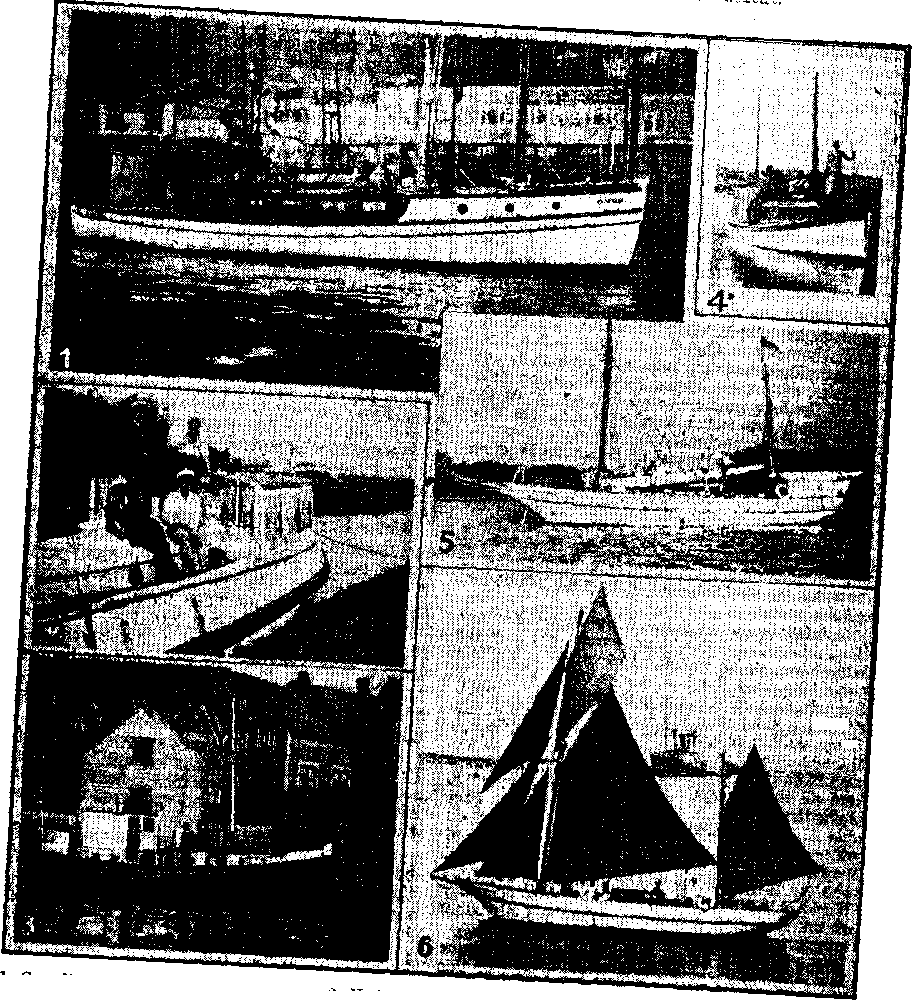

1938
Consolation
Magazine
An Australian on Health and Dis-eaae 3
Australia
Candidates for the Haul of Shame 14
Kingdom Tidings by Boat—Luke 5:3
Excommunication of Victor Emmanuel 16
By Trail and Stream and Garden Path
■ Published every other Woduesday by
THE GOLDEN AGE PUBLISHING COMPANY, INC, 11T Adame St., Brooklyn, N. Y., U, S. A.
Preelderrt Clayton 3. Woodworth
Vice-President Nathan H Knorr
Secretary anti Treasurer Charles E. Wagner
Five Cents a Copy
*1 a year In the United States ' J1.2S to Canada and all other countries
NOTICE TO SUBSCRIBERS
Remittances! For your own safety, remit by postal or express money order. When coin or currency la lost in the ordinary malls, there le no redress. Remittances from countries other than those named below may be made to the Brooklyn office, but only by International postal money order.
Receipt of a new or renewal subscription will be acknowledged only when requested. Notice of Expiration Is sent with the journal one month before subscription expires. Please renew promptly to avoid loss of copies. Send change of address direct to us rather than to the post office. Your request should reach us at least two weeks before the date of Issue with which It Is to take effect. Send your old as well as the new address. Copies will not be forwarded by the post office to your new address unless extra postage Is provided by you.
Published also in Bohemian, Danish, Dutch, Finnish, French, German, Greek, Japanese, Norwegian, Polish, Spanish, Swedish. ;
OFFICES FOR OTHER COUNTRIES
England 34 Craven Tarrace, London, W. 2
Canada 40 Irwin Avenue, Toronto 6, Ontario ■ Australia 7 Beresford Road, Strathfield, N.S.VV.
South Africa 623 Boston House, Cape Town Entered as second-class matter at Brooklyn, N. Y., under the Act of March 3, 1870.
2 :
' “And Don’t Go Near the Water”
FffijUMyi AT Leaksville, North Carolina, the »sE '‘Reverend” Erskine X. Heather-IMMK, ley, pastor of the King Memorial hPLRV" Baptist church, like a Jesuit in disK------- guise, fired 26 members out of the
church because they went swimming in pools frequented by both men and women, and otherwise used their reason and common sense. Thirteen other “prisoners” quit when the 26 were fired; one woman swooned and had to be carried home; men and women wept. A swell spiritual feast. Religion more foolish than ever.
One More Bogus Spanish Saint
♦ Seemingly, just to keep his name in the papers, the pope manufactured another Spanish saint, one Salvador Da Orta, and then said he hoped the new saint thus manufactured would help to bring about peace in Spain. Can you think of anything more supremely silly? Da Orta is not even mentioned in the Encyclopedia Americana, constant use of which discloses more and more that it is under Roman Catholic influence or control.
Decatur, Georgia, Is in the U. S. A.
♦ Officials in Decatur, Georgia, were greatly surprised not long ago to learn that their town is still in the United States. They had arrested one of Jehovah’s witnesses, whereupon the attorney for the lady had subpoenas issued for the leading Baptist minister and the chief Methodist preacher, to ascertain the nature of their religious business. The city attorney and the judge in the case felt the approaching heat and dismissed the case.
Winter have gone
And Spring are hear!
It happens that way
Every yeer!
The Grass has growed thru vernal thaws More greener than it used to was;
So leave us lift our voice and sing Like we was glad that it are Spring.
Delicious Spring
Spring, 0 most delicious Spring!
You are when mosquitoes do not sting. That is because in you they do not get Born yet.—Almanac for Hew Yorkers.
CONSOLATION
“And in His name shall the nations hope.’’—Matthew 12:21, A.R.V,
Volume XIX Brooklyn, N. Y., Wednesday, April 6, 1938 Number 484
An Australian on Health and Dis-ease
[Contributors will kindly note that, inasmuch as all diet systems differ, no further articles on this subject are desired.—2,’d. ]
IF THERE is one thing in this life we should understand, it is our own body; for upon it most things this side of the grave will depend. Yet how little, if any, knowledge on this subject is included in the education of the average child! Very few seem to realize that their body is made out of the food they eat and drink. I am sure that a good general understanding of the functions of the food tract, including the bowels, would make life well worth living to the end.
With these thoughts in mind I am making an effort to contribute something to that purpose. Thoughts are like seeds: when they are cast about, they grow; but thoughts, like seeds, will not grow everywhere. This will be especially so in this ease, as my thoughts are so different from the generally accepted idea of disease, but they have the advantage of being able to cure and prevent all disease, and in very quick time; in fact, as soon as you start to obey the laws of nature you feel your health returning.
The difference between the popular theory of disease and my idea is that the popular theory looks upon the human body as a very imperfect bit of workmanship that does not work too well; so, among other things, they cut out any spare parts, sometimes for no other reason than that they do not know what they are there for.
To my mind that method works splendidly as a method of getting rich, but from the sufferer’s viewpoint it is a complete failure. Consider for a moment the amount of disease in this world today, the number of diseases that are admitted to be incurable, the new diseases, and the fact that disease is ever on the increase, and 1 am sure you will need to be a supreme optimist to be satisfied with the old method of treatment.
My idea is that the human body is the most
APRIL e, 1938
nearly perfect thing in this world. It does not suffer because it is not able to do the things that it was made to do; it is because we ask it to do things it was not made to do. It is like this: Once I lent a razor to a friend, and after he had shaved he tried to screw on a rubber heel with it. The razor broke under the strain, but that did not prove the razor was not a good razor; to get the best out of that razor it must be used only for shaving. And so it is with us; the only life worth living is to live according to the Jaws of nature. And don’t forget, there is no other way to get the best out of this life.
All life, and for that matter the whole universe, is governed by certain clearly defined laws which are perfect. When you are sick you have broken nature’s law, probably through ignorance of those laws; you need have no doubt about this. But you will say: “What about the germs?” Well, I will deal with thbm very effectively later. Let us first consider these laws of nature.
The first law of nature is that we should eat to live. But we do not eat to live; we live to eat (and dririk), i.e., we eat only those things that are nice or most convenient, and we drink when someone says, “Can you stop one?>” The first sin in this world is said to be eating something that should not be eaten; and it is still the one great sin that makes us suffer (and the one that our preachers say least about).
Perfect health is enjoyed only by those who keep nature’s laws, and perfect health is depicted in the perfect shape of the body. When you get the so-called “middle age spread”, a double chin, etc., and when it is necessary to use paint, powder or lipstick, you are building up for disease.
If you study the first Jaw of nature you will find that every living thing has a certain class
3 of diet. Dogs and eats cat meat, birds prefer seeds, horses and cows cat grass or herbage; and monkeys, which somewhat resemble us, eat fruit, nuts and vegetation, and do not suffer much from disease, even though they live a rough, dangerous life, with no carefully regulated supply of food. In captivity they can be taught to eat meat, sweets, preserved food, etc., and when they take the human diet they generally die of consumption within twelve months. Does that suggest anything to you, or do you still believe that consumption is caused by a germ ? I have proved my ability to cure consumption in its last stage when all hope was gone; the germ specialists cannot do that.
But to return to the point, human diet: It is necessary to know something about digestion before you can know anything about dieting. In the first place, you must know that the different classes of food are digested by different juices. The first is the saliva, in the mouth; it will digest all the starchy class, such as bread, potatoes, etc. Therefore, the longer you chew that class, the easier it will digest; in fact, there would be very little disease in this world if people would eat their food properly.
The second digestive juice is the gastric, which is secreted by the walls of the stomach. Its job is to digest all the albuminous substances, as meat, boiled eggs, the curd of milk, etc. ’
The third digestive juice is the pancreatic. It can digest stareh, albumen, and fats. It seems to complete the job after the other juices have done their part. It acts on everything except cane sugar.
The fourth digestive juice is the bile. It has several jobs to do, one of which is to dissolve the fats.
The fifth digestive juice is the intestinal. It is able to finish the job on every class of food, including cane sugar, which cannot be digested by any other juice; and the less sugar you consume, the better. (I refer to cane sugar.) So, you see, of the five fluids used by the digestive canal, three will dissolve one each of the three classes of digestible food, one will dissolve all except cane sugar, and the last will dissolve all digestible food; thus, natures provisions are complete.
Digestion starts in the mouth, by the action of saliva; it proceeds further in the stomach, where the gastric and pancreatic juices do their part. The food is rolled round by the muscular action of the stomach and ib gradually passes through the door info the first part of the small intestines, where the bile and the intestinal juice wull do their part. As the food passes on through about thirty feet of intestine it is gradually absorbed and carried through small veins to a large one which takes it to the liver. After the liver has done its job, the result is sent on through a large vein to the lungs, where the final digestive process takes place, which means that the lungs turn the food into blood. The blood is then pumped through the body to pick up the worn-out particles and replace them with new ones.
So, you see, nature requires everything to go through many and various processes before it is in a condition to build the human body.
Now, having briefly followed that part of the food which is used to repair and build our body, we will consider the residue, or that part which we are not able to digest.
The undigested part of the food passes from the small intestine, through a door near the bottom of the abdomen on the right side, into the colon. There its moisture is gradually absorbed and it assumes a more solid form; the longer it remains in there, the harder it gets.
,From there it has to be forced up to about the bottom of the ribs, then across to the left side, and down to the rectum, from which it is expelled.
Now I am going to say something which, if you do not thoroughly comprehend it, will result in your losing the message I am trying to convey. I want you to know that the bowels constitute the poison factory in which nearly all dis-ease is manufactured. Also, it does not matter what disease you get—if a cold, headache, toothache, diphtheria, consumption, cancer, or any other disease—the first place to start treatment is the bowels.
Just apply a simple method of psychology to any disease: Take a cold; you cough up large clots of phlegm. Where does the phlegm come from? You say, the lungs; but how does it get into the lungs? There is only one way for anything except air to get into the lungs, and that is, to be carried there by the blood; so where could the blood get the phlegm to take to the lungs? Well, in this case it may or may not come from the poison factory (the bowels). When the contents of the bowels are retained too long, the poisons generated
therein find their way into the blood, and if they are not filtered out by the kidneys they may be deposited in the lungs. Another way is from the skin. One of the main duties of the skin is to get rid of a lot of the poisons which are generated in the body; this it does by sweating. In the cold weather nature closes the door against the cold, but what keeps the cold out keeps the poisons in; they are then picked up by the blood and carried into the lungs. One of the jobs the lungs have to do is to use the oxygen from the air to burn up the waste particles. In the winter the air contains a large percentage of water. That means we are breathing only part air, and part water; therefore we are getting less oxygen, so will not be able to burn up so many worn particles; and as the lungs will now be getting part of the skin’s job, they will be unable to cope with the supply; so nature comes to the rescue with a mass expulsion method called “a cold”. The poisons from the bowels or skin are contained in the phlegm; therefore, to cure the cold you must stop the flow of poisons to the lungs; and to do that you must clear the bowels out and make the skin work or sweat; when you sweat you must wash the poisons off. To do that you will have a good hot bath and go to bed; add to this a very light diet, sunshine, fresh air, and exercise, and nature will soon do the rest.
If you digest your food you cannot have constipation, unless your bowels have been so weakened by years of abuse and purgatives that normal action Is not possible; and if your bowels are clean you will not suffer much from disease, germs or no germs. That being the ease, it will be seen clearly that if you can digest your food you can prevent most diseases. You will now ask, Why does our stomach fail to digest our food ? I say, Mainly because we do not eat to live—we live to eat.
The question now is, What shall we eat? I think we must ask nature to answer that question.
First we will ask, What are the classes of food which nature has provided us with the necessary facilities to digest? Wre will take meat, and compare our facilities with those of a meat-eater, a dog. Meat is digested by the gastric juice from the walls of the stomach, the nourishment is absorbed as it passes through the intestines, and the residue quickly goes putrid and forms a mass of living bacteria. This bacteria creates very deadly poisons which,: if -not quickly devoured or expelled,
At?RIL$, 133$
will get into the blood and may cause disease in any part or the whole body. Now a dog has sharp teeth to penetrate the meat so the juice can get in; our teeth tend more to bruise the meat. A dog has a very large stomach to supply the gastric juice: we have a comparatively small stomach. A dog has a very short length of intestine, so the residue will be expelled before it goes putrid; we have about thirty feet of intestine, so it is not possible for us to get rid of the residue before it goes putrid.
You may be eating all the best of nature’s products and still be poisoning your body, as certain foods do not mix well in the stomach. The following list, being simple and plainly put, should save you from these mistakes:
VEGETABLES
Agree with:
Flour and Meal
Cereals
Breadstuffs
Pulses
Berries
Milk and milk products
Nuts
Potatoes
Eggs
Puddings
Disagree with:
Fruit
Sugar
POTATOES
Agree with; Disagree with:
Vegetables Eggs Nuts Cereals Fruit
Milk and milk products Rice Sugar
EGGS
|
Agree Potatoes Vegetables Nuts |
with : ' Cereals Fruit |
Disagree Milk Cake Pulses |
with: Cheese Butter Sugar |
|
FRUITS | |||
|
Agree Berries Nuts Dairy foods Onions |
with: Cereals Eggs Honey |
Disagree Sugar Potatoes Cakes |
with: Vegetables Milk Water |
|
CEREALS | |||
|
Agree Fruit Eggs ■ ’ |
with: Nuts Vegetables |
Milk and milk products Disagree with: Potatoes Sugar | |
|
PULSES | |||
|
Agree Cereals |
with: . Vegetables |
Disagree Mushrooms |
with : Fruit |
Dairy foods ' Milk Sugar
Those: facts; backed up by personal experience, have proved to me that I am healthier, and able to do more work, without meat. With fruit, nuts, vegetables, and grain products nature is in full accord. Our teeth are shaped to crush these classes of food so the tongue can mix in the saliva to digest it. Our stomach
......... . . _
is provided with a series of fluids quite able to finish the job to perfection. The residue will ferment and form a living mass of bacteria, but this bacteria is favorable to us, and will devour all the other bacteria, including the meat bacteria; thus nature tries to save us from the penalty of our sins. Food is best as nature supplies it; the more you preserve, sterilize, mix, or manufacture it, the harder it will be for your stomach to digest it.
We have briefly considered food first; but as we can live longer without food than without drink, you will see that drink is more important than food. This fact should be sufficient to show you how necessary it is to control it.
What shall I drink ? When ? and how much ? Nature never intended us to drink for friendship’s sake; no other living thing takes a drink every time it meets any other special living thing. Why should it? Why should we?
Water is nature’s drink. It serves many purposes. It goes in pure and always comes out loaded with poisons. It should be taken in large quantities for that reason, but not when there is food in the stomach. If you drink anything cold while there is food in the stomach digestion will stop, and it will not start again until the contents of the stomach regain the right temperature, during Which time the food will probably go sour. A hot drink will not stop digestion; it is also better for cleansing the system, especially in catarrh of the stomach. A large glass should be taken first thing in the morning, as much as you can manage through the day, and more last thing at night.
The most necessary thing to life is Aiit; it costs nothing in cash, and very little effort is needed to take in as much as you can use. Those facts have protected our air from vested interests; so it is not subjected to the abuses to which .our food and drink are subjected. I will not, therefore, dwell on it any further here.
This is not the 'whole story of our bodily functions, but it is, I hope, sufficient to help you to understand what I am talking about.
It is very hard to find any section of organized society where vested interests do not reign supreme. They certainly rule so-called "Medical Science”. To back that statement I will quote one, "Physicus. ” Writing in the West Australian and discussing a certain disease, he said: "Therefore the most logical way to treat this disease would be by sweating, but sweating does not cost anything, and the one unforgivable sin in the British Medical Association is to prescribe something that does not cost money; so we must treat, it otherwise. ’ ’ I could fill a book with such statements made by the highest medical authorities, but that one, being so plainly and honestly written, should suffice.
As the next law of nature I will mention the fact that man Was intended to work for his living, and in moderation I regard it as my best friend, and hope to work till I die.
Another law that is very much abused is that of sleep. It is very necessary that we should have plenty of sleep to allow the blood to catch up in its job of removing the worn-out particles and replacing them with new ones. Many people will say, "Oh, but I cannot Sleep. ’ ’ The reason is, their body is in such a dis-eased condition caused by disobeying the laws of nature, probably for years; then to add insult to injury they go to the chemist for relief, and he drugs them to sleep, which makes their condition more chronic.
As all life emanates from the reciprocal action of the sun, air, and water, we can never be at our best if we do not have plenty of each, including sunshine; but as, like air, sunshine is free and cannot be controlled by vested interests, there are few to advertise and extol the benefits of sunshine. Very few people think for themselves; in fact, when they die their brains are quite new, as they have never been used. They swallow the lying Statements of advertisers whose sole object is to sell their goods.
There are other things that affect the health, such as a contented mind. The man who sets out in life to get rich seldom retains health or happiness. The happiest people are those who are satisfied with their share of the good things of this world; when you want other people’s share as well as your own you get trouble.
We will now consider dis-ease. (Noto the word "dis-ease,” meaning dis-comfort or disorder.) I have tried to make it plain that the cause of disease is breaking the laws of nature. Now you say: "What takes place in my body when I disobey nature’s law?” Well, that depends on which law you disobey. If it is that you eat too much (your body can Use only a certain quantity, even if the lot is digested) nature may store the over-supply in the form
of fat. If you continue to overeat, nature, being pressed for space, may store it where it will retard the action of the organs. That is one of the starting points of disease, but nature may make an effort to save you. You may lose your appetite till you use up some of the excess; or, more likely, nature, not working at its top, fails to keep the excess in a state of preservation, so it will ferment or decay, and in that process gases are formed and they press to all parts of the body. That is why you lose your energy when you are ill; the pressure of the gases on the organs is like driving a car with the brake on.
But nature still has some cards left; it will use many methods to remove that decaying mass, one of which is to create quantities of germs to devour it. Germs are like every other living thing: they have a special class of diet, viz., decaying matter; they do not eat the healthy tissue—not while it is healthy. The germs are not the cause of disease: they are the result of a diseased condition inside; and the cure is not to kill the germs: it is to take their food away. Look at it this way: You kill a perfectly healthy dog and allow him to lie till next day. You will find he is full of germs, but you know the germs did not kill the dog; they are part of the economy of nature and are doing nature’s work removing decaying or useless matter. It is equally wrong to blame the germs when you are ill because you can find them in your body. If you did not kill the dog the germs would not be in him, and if you did not break the laws of nature there would not be any decaying matter in your body, on which the germs feed; for germs cannot live without food.
While on this matter of germs I will say that their part in causing disease is the same as of the yeast in dough. The yeast causes fermentation, and germs will cause the oversupply of nourishment, or other matter which is being stored in the body, to ferment. In that process all the useless matter in the body can be removed, that is, if you help nature to do tlio job, instead of poisoning the body with quantities of so-called “medicine” containing drugs and poisons, until the body has not got enough vitality left to finish the job. You see, then, that disease, like pain, is our friend and helper to the same extent as the money lender; but as it is much better never to need the assistance of the money lender, you Will be much better if you do not do the
APRIL 6, 1938
things that make the cleansing process of disease necessary.
Now I will paint another picture. Syphilis is one of the most terrible forms of disease. In its so-called “different stages” we can see nature’s efforts to rid the body of its poisonous contents, the skin being particularly active. Until recently this disease was treated with arsenic or mercury mixtures, which made all outward traces of the disease disappear, and they thought they were cured. However, people who were cured (1) by these mixtures eventually became paralyzed. Investigation proved they were not cured: the disease still prevailed inside and poisoned the system until the paralyzed parts were no longer able to work. The explanation of this result of such treatment is as follows:
In the early stages nature is strong enough to make an effort to rid the body of this poisonous matter by expelling it through the skin (as 1 explained before, one of the skin’s jobs is to get rid of the poisons; so, when you have So-called “skin diseases”, don’t stop nature —help it—the trouble is inside) ; but arsenic and mercury are deadly poisons, and if you take a large enough dose you die. If you take a smaller dose you do a corresponding amount of damage, or a half dose will half kill you. When you arc half dead your body is not strong enough to make the effort to rid itself of its poisons.
’ This is exactly what happens in every case where disease is treated with medicine. Drugs and poisons stop nature; they never help nature; and you continue to stop nature right through life until your body gets so full of decaying matter that you cannot find anything strong enough to stop it; then your condition is called “cancerous”. That is why cancer, like leprosy, is not contagious; it is due to an extreme condition of the body, and you cannot catch that condition ; you can only create it. It is the last stage of a diseased condition that has taken years of disobedience of nature’s laws to create.
The cure today for syphilis is a vegetarian diet, employing all the laws of*hygiene, and no medicine.
The same applies to consumption. After spending millions of pounds and years of research, the best treatment today is diet, fresh air, exercise and sunshine.
But the trouble is they do not know why it is the best treatment. In our sanatorium at
7
Wooroloo the patients believe that while they are gaining weight they are getting better and if they are losing weight they are dying. Therefore they consider it is necessary to eat as much as possible; so, in addition to their three meals, they drink milk, etc., between meals, and their stomach is always loaded. Now a sick stomach cannot do as much work as a well stomach, and I want you to realize that it is not what you eat that will help you: it is the amount you are able to digest and absorb; and any excess is equal to keeping a loaded gun in your living room when you are healthy, and when you are ill it is retarding progress and poisoning your body.
As consumption has probably taken years to develop, through disobedience to nature’s laws, it cannot be cured in a week; but it is possible for anyone who understands the laws of nature to make so great an improvement in one week that there will not be room for any doubt about the ultimate result. It is not possible to replace any organ or any part that is already destroyed, but a small portion of lung can be developed to such an extent that many years of happy life are possible.
The proper treatment for consumption is the same as for all other chronic or last-stage diseases.
Dis-ease means dis-order, or not in good order. Well, the job is to put it in good order. Man has all the necessary organs in his body to keep it in shape and condition under normal conditions. It is necessary to bring about those normal conditions, and we will start on the sewerage system of the body. The skin will be first, with a Turkish bath; and when you see what comes out of your skin you will get some idea of what the rest is like.
Next morning we will start inside, and for all chronic diseases the best plan is a diet composed of milk, bran, and fruit. Start' at 6: 30 a.m. with a big drink of water; at 7 a.m, eat some fruit and bran; at 9 a.m. drink some milk; at 9:30 a.m., 10 a.m,, 10:30 a.m., and every half-hour till 5 p.m. continue to drink the same quantity of milk; at 7 p.m. cat.fruit and bran.
The bran can be made into scones if preferable. This diet will last two weeks, during which no other food may be eaten. Great care must be taken when you return to three normal meals a day. Only the food that is easy to digest may be eaten, taking care to select food that will mix well in the stomach. No food may be eaten between meals; and milk, or anything else that has to be digested, is fodd. Drink plenty of water, but not within an hour before meals or two hours after a meal.
I want to impress on you that not only your health, strength, and happiness, but also your very life, depend on this food problem, and the one mistake that causes most trouble is slop feeding: soup, dipping crust, etc., in tea, washing everything down with a mouthful of tea, boiled bread and milk for breakfast, etc. I explained earlier that all the starchy class are digested by the saliva in the mouth, If your food is thoroughly saturated with liquid before it enters the mouth there will be no room for the saliva: so that food cannot digest.
That means that undigested matter will get into the blood and may block the cells of the liver or lungs, or any other part of the body, and this is the starting-point of disease. When you are ill, dry feeding is absolutely necessary ; the old idea of beef tea, chicken broth, etc., never did anyone any good unless it was through their lack of nourishment.
Do not look on consumption as a disease of the lungs: it is a disease of the whole body; and your stomach being weakened by disease, it must not be asked to digest large quantities of rich food. The only part that can be worked hard in diseases is the teeth; and the more they work, the better.
If strong enough, two steam or Turkish baths a week and a warm bath every night at least two hours after the last meal. Finish the bath by sponging the head and upper half of the body with cool water; then go to bed.
In all chronic diseases the whole body is impregnated with foreign matter, and the blood will be required to remove its share of the foreign matter. By drinking large quantities of water you help the blood, also the heart, arteries, kidneys, and anabolic and metabolic action. As the blood will flow easier in the liquid form and will thus be able to carry a larger quantity of waste matter to the kidneys and lungs, the lungs will now require large quantities of pure air to enable them to deal with this extra work. Therefore you must live in the open air and in a dry climate, as you must breathe all air, not half air and half water. Add to this plenty of sunshine, and the logical use of physical exercises, especially deep breathing. -
The nerves will have their share to do, and tlicre are many ways to enlist their services.
CONSOLATION
By the application of hot and cold water, also electricity skillfully used, “miracles” can be performed. '
It may be noticed that I have not said anything about the main sewerage system of the body—the bowels.
When the bowels are mentioned the first and only thought is a purgative. Now I want you to especially remember, there is no such thing in this world as a “harmless purgative. ’ ’ The only reason why a purgative works is that it is poison, and the irritation caused by it sets up a violent action of the stomach and the whole thirty feet of intestines, when it is probably only in the last five feet where the blockage is. But worse still is the fact that all the valuable juices used for digesting the food will be shot out with the rest. That is why after a purgative you often get blocked up. You eat the next meal as if everything were right inside; but you have washed out all the digestive juices; so that meal will go through not digested. Undigested food is the cause of constipation. The only cure for constipation is to eat only the food you are able to digest.
In advanced conditions of disease the bowels are so' weakened, by years of constipation and the use of purgatives, that normal action is not possible; therefore the enema will be necessary for some considerable time. Certain physical exercises will help to effect a permanent cure, while purgatives can only make the complaint permanent.
Real health or happiness cannot exist where constipation prevails.
The above treatment will also positively cure cancer, leprosy, syphilis, rheumatism, and all other chronic or last-stage diseases. It is necessary to have a thorough knowledge of the laws of nature, especially for the cure of cancer, but there never has been and never can be any other cure.
This will sound like tall talk to most people, but it is the simple truth; and until we can take the mystery out of disease we can never make any real progress. I assure you there is nothing mysterious about disease; in fact, it is all too simple for words, when understood. Every condition that prevails is caused by some action of our own.
In the acute or first-stage diseases the recovery is much quicker and simpler. Take the much-discussed diphtheria; its sole cause is the fermentation of a quantity of foreign matter in the abdomen. In the process of fermentation gases are formed and they press to all parts of the body. The neck being a narrow passage, the pressure there is intense, and if not relieved will close the windpipe, when death will occur.
The cure is to open the ventilators (the pores of the skin) to let the gases out. You will do this by making the patient sweat; the steam bath is the best. The bowels must be washed out with an enema, when the patient will be much relieved. If the pain returns, put the patient back in the warm bath, not the steam bath; this must be repeated as often as the pain returns. The patient should be back at school in five days. In diphtheria the diet must be restricted; milk or fruit juices are best, with plenty of water to drink, until well out of danger.—W. G. Galbraith, Australia.
♦ Nothing faintly approaching the distribution of Judge Rutherford’s books ever took place before in history. They come to over a quarter of a billion copies; think of it, 252,000,0001 And now the millions that have been blessed by his able, scholarly, Scriptural and truthful books will be interested in a question asked by a reader of the Catholic Freeman’s Journal, Australia, and by the answer, a portion of which appears below. It speaks for itself: .
Why has not a representative of the Roman Catholic Hierarchy granted his request for a public debate J
APRIL 6, 1938
No sane person would humor an ignorant, deranged and abusive charlatan whose one craving is publicity. Rutherford is as ignorant of his subject as an infant-in-arms. His challenge is as7 absurd as would be that of a child who is just com-meneing school, yet who would challenge Einstein to a debate on relativity. Again, Rutherford’s books are filled with insane twaddle. If a lunatic tells you that he is a poached egg, anxious to sit on a piece of toast, you don’t debate with him.
All this is but the language of terror and despair. Caught in its own dragnet of lies, the Hierarchy has no answer to the truth, and well knows it.
In the Catholic Freeman’s Journal is another hypocritical headline besides that of the paper itself—-for there is no such thing as a free man who is subject to the Roman Catholic Hierarchy. The article in question is by the “Reverend Father” Henri Blane. Stung by the evidence which is accumulating everywhere that Fascism (Catholic Action) is the coming menace of the world, he tries to defend it by a distinction which does not exist. Under the hypocritical headlines “Red Fascism, the Real World Menace: Moscow’s Confusion of Terms” he tries to show that there are two kinds of Fascism. In the article he says,
As we see it, there is nothing in Fascism that is criminal and subversive, nothing to be frightened at. On the contrary, Fascism is a most harmless word, one that stands for order and security. What is criminal and most condemnable is to distort the meaning of the word by associating it with intents or purposes whieh Fascism never had.
Mr. Blane is quite correct in his proposition that Fascism and the Roman Hierarchy find nothing wrong with each other, but is entirely incorrect in his proposals that there is a good Fascism and a bad Fascism. Both are of the Devil, and the Moscow brand, trading under the name Communism, is as hateful as the Berlin brand trading under Nazism or the Italian Fascism itself.
♦ A hundred years ago there were three Roman Catholic priests in Australia. Now, though the Catholic population is only 1,459,179 out of a total of G,775.3G1, there are 7 archbishops, 20 bishops and over 2,000 priests.
♦ I am of opinion that the Labor Party in Queensland, with its 27 Roman Catholic members of Parliament out of 43, is definitely dominated by Roman Catholic influences and that Protestant principles are in grave danger by the continuance in office of such a party. We believe that Roman Catholic leaders have used the Labor movement for their own ends.
Roman Catholics are 19.2 percent only of the population, but this small proportion has appropriated 27 places out of a total parliamentary strength of 43. It has 5 out of 7 Supreme Court judgeships; 3 out of 3 seats on the Industrial Court, 75 percent of Civil Service appointments, and 70 percent of the police force.
The extent of their influence may be seen when it is realized, also, that out df moneys spent on relief work in respect of church buildings and properties Roman Catholics have received assistance in the proportion of £35,000 to £27,000. Strange to say, by the way, the number of Roman Catholic relief workers is under 10 percent.
The Protestant Labor Party does not believe that the Roman Catholic Church, as a political organization, has any tolerance in its make-up. Quite recently, in Abyssinia, Protestant missionaries were expelled from the country. In Italy, under Mussolini, who is now working with the pope, Protestant missionaries have a very bad time and have no privileges similar to those accorded to Catholic priests.
One very noticeable feature of a Roman Catholic country is the existence of fine and elaborate churches and church buildings, side by side with the poorest of slums and with dire poverty. Here in Queensland we find relief workers improving church properties and buildings and forced to exist on a meager pittance.
What can be thought of a government whose solution of the unemployed problem in this State is to tax its people and spend the money received from such taxation on the improvement of church buildings and properties when so much national work (such as roads, bridges, and irrigation) is urgently necessary?—G. S. Webb, Esq., in Maryborough Chronicle.
♦ In Victoria the Roman Catholics are 18 percent of the population, while the Presbyterians and Methodists are 25 percent. In 1935 the Roman .Catholic prisoners numbered 2,164; the Presbyterian and Methodist combined, only 1,035. In New South Wales, Roman Catholics are 21 percent, and Methodists and Presbyterians 17 percent of the population. On June 30, 1935, there were 454 Roman Catholics serving sentences, and 120 Presbyterians and Methodists. In Queensland the Roman Catholics are 21 percent, while Presbyterians and Methodists are 20 percent of the population. In 1934 the Roman Catholic prisoners were 744, while Presbyterians and Methodists combined were 285. This all means that the Roman Catholic teaching appears to produce three times as many criminals as Presbyterian and Methodist.—The Protestant World, Sydney.
♦ For some years now about 4,000 more Britons have left Australia than have entered it. Meantime a steady stream of Italians has been entering and remaining. In parts of North Queensland Italian is spoken as much as English; there are Italian schools and Italian newspapers, and some police are required to have a knowledge of Italian in order to be acceptable members of the force.
Australia Ready for a Dictator
♦ Professor F. A. Bland, teacher of public administration at the University of Sydney, is accredited in dispatches from Sydney as having declared that, the ground having been carefully prepared, Australia is now ready for a dictator who will rise at the right moment and exterminate all enemies. Already, on the part of the populace, there is a ready acceptance of prohibitions and restrictions on personal liberty which presages the Fascist state.
♦ To illustrate the ease with which a perfectly natural mental process can be torn from its setting, the following is told of the experience of three men traveling through a dairying district of New South Wales.
One was a clergyman, one was a young man of 25, and sitting in the far corner of the carriage was a man of 45 who was of the type that does more thinking than talking. No word was spoken by any until the train was pulling out of a small country siding, when the young fellow said, without apparent reason, “We were only kids, though.’’ ,
Realizing that he had been thinking aloud he explained that he had been thinking of his school days. The D.D. to whom he had addressed his remark looked surprised and said, “I was thinking of the same thing; that is thought transmission.” With that he immediately launched a discourse on the proof and possibilities of this power. In a few seconds he had taken all three out of New South Wales into China, where he had spent some years, and where the Chinese, so he said, had developed this power to the extent that they could transmit their thoughts over long distances; but he did not identify the Chinese exploits as demonism, which he should have done.
But returning to the incident in New South Wales: When the clergyman stopped for
APRIL*, 1»sa
breath the middle-aged man asked if either of his companions had caught the smell of clover just as the train pulled out of the last siding. After a moment’s thought they both admitted that they had. “But it was almost unnoticeablc, ” said the D.D., with a trace of annoyance at having his narrative interrupted by such an apparently irrelevant question.
However, the first question was followed by a second one, “Has either one of you ever farmed ? ” It seems that both of them had done so, both having spent their childhood on farms closely connected with clover. “Then,” said the man in the corner, “that explains your thought transmission; it was merely the result of unconscious memory, stimulated by the familiar odor of your youth.”
♦ In 1925 an American officer who visited New Zealand with the American fleet left a ten-pound note with the bartender of his hotel while he went to the horse races. The bartender put the note in the cash register and went off duty. The proprietor saw it in the drawer and borrowed it to pay the brewer. The brewer paid his tailor, the tailor paid his grocer, the grocer paid his doctor, and the doctor, a guest at the same hotel, paid the amount on his board bill and the ten-pound note went back into the cash register. When the officer came back from the races he recovered the note from the bartender and tore it in pieces. When the bartender objected, the American explained that it was a counterfeit. Houghton wants to know if this was inflation.
♦ When a launch capsized in Sydney harbor, throwing 175 people into the shark-infested waters, seven officers and men of the U. 9. cruiser Louisville, and members of the Sydney police, dived into the water again and again, smashing the windows to let passengers out, and then swimming with them to places of safety. One man was seen swimming with five people clinging to him. Such things make you love your fellow man and realize that, with all their devilish and fiendish dictators and ecclesiastics and money-grabbers, there are such things as real men in the world. In due time these, and such alone, will inhabit the earth. The Devil is having his last innings right now.
11
Sydney, Australia.
ONE hundred and seven of the 150 residents of Major’s Creek, a mining village 12 miles from Braidwood, who attended the annual
New Year’s Day Picnic on the Recreation ' Ground yesterday, were admitted to hospital suffering from food poisoning. All are now out of danger, and 22 were discharged from hospital this morning.
In addition to temporary wards in the grounds of the Braidwood Hospital, a temporary hospital had to be established in the school hall of the Braidwood Convent. Fifty-six patients were accommodated there. Practically everyone who attended the picnic was affected by food poisoning.
For the picnic a large quantity of corned meat was cooked in a laundry copper, and afterwards put through a mincer and kept in aluminum containers until sandwiches were made. These and other foods were served to . the picnickers about noon. Less than an hour afterwards many were seized with abdominal pains, which resembled stomach cramp. The first to collapse was Constable Burr. Within a few minutes adults and children were writhing in agony.—Brisbane Courier-Mail.
[It should be explained tliat the Mellon interests ‘do not have their work as well organized in Australia as in the United States, where pubEeity of this embarrassing kind could not occur.—Eci.]
Thrilling Experience in Queensland
♦ On my way to the Jinma gold fields, via Kilcoy, Queensland, with the portable transcription machine, I met a mail man. He asked me if I had heard that a man by the name of Snyder, a gold prospector, had been lost for five days, and nearly all of the men of Jimna, including the police from Jimna and Kilcoy, all together over fifty men, were out looking for him. He stated that a prearranged signal, namely, the discharge of four plugs of dynamite, had been decided on to recall the different parties, in the event of the man’s being found. "A
The country he was lost in was rough, mountainous country. I was halfway up the Jimna range at the time it was told to me. I had yet about twelve miles to go, and was pushing on in my Ford, when I arrived at the last little ridge before going down to the gold diggers’ camp. I stopped the car and shelled the camp with fine music, so as to briiig together the campers that might be left, to hear Judge Rutherford on “Resurrection” and other subjects.
To my surprise the eannon ball of music hit the lost man, he having just arrived home on his own account and being at that minute in the home of a friend, having something to eat and drink. With others he rushed out, thinking the Jimna band had come out to welcome the lost digger home. They shouted, “More! More!” so I plugged their ears, not with sounds of dynamite explosions, as others over the ridge were receiving, on account of the lost man’s having been found, but with the clear voice of Judge Rutherford on “Resurrection”.
As soon as they learned who was speaking, the diggers all came to the van and said it was a good welcome for the lost man. That night I gave them all some more. They wanted to hear all I had, and I gave it to them, and the next day placed many pieces of literature, books, booklets, and copies of Consolation, That day, also, under the tutelage of an old gold digger I had the .unique experience of washing some gold and turned up a half pennyweight within a few minutes. The man who was lost had been an atheist, because he was sick of the churches, but now he is reading Judge Rutherford’s books and finding his way out of the dark.—Tommy Atkins, Queensland. '
♦ Two pearl-running boats, captured off the north coast of Australia, had on board twelve women, sold to the Japanese traders, by the aborigines, for four plugs of chewing tobacco, twenty pounds of flour and a package of cheap cigarettes. The cigarettes were given as full payment for a delicate native girl, ten years old, who died from injuries soon after her purchase and was thrown overboard before the boat was raided. So says a copyrighted article in the American Weekly.
♦ Wellington, New Zealand, considers milk a public utility and handles it as such. In 20 years the price was reduced from 17c to 10c per quart, the farmer was paid 15 percent more for his milk, distributors are paid 15 percent better wages and work shorter hours, and in Wellington a surplus of $38,865.42 was returned to the public treasury.
THE resentment began to gather force and form when the president, after being safely installed in office, proceeded to nullify nearly every item of a platform he formally indorsed 100 per eent. . . .
Then followed a series of acts, the consequences of which have manacled the present generation of Americans and have mortgaged their children and children’s children for generations to follow7: The “brain trusters” and their follies; the flight of all the de-p endable officials from the public service, many his own appointees, and their radical replacements; the alphabetical enormities; the raids, one after another, on the taxpayers; the assaults on industry ;
E-magine F1)R wanting to be dictator
I jutting the government into the field of private business and the illegal encroachments therein; the vindictiveness displayed against the thrifty and successful ; threatening to deplete the reserve of industrial organizations ; destroying the sources of food supply and forcing the cost of living to higher planes; piling up the public debt to an abnormal figure; giving into the hands of men of no business experience and unused to the management of money vast sums which they toss about like gold bricks; creating a slush fund of five billions, illegally obtained, and transferring the methods of its employment into the hands of a notorious spoilsman—a sinister plan to use the money of one class to buy the votes of another; putting Colonel Lindbergh “on the spot” in order to smear the former Administration; sacrificing the lives of twelve Army fliers after ample warming of their peril; recognition of Soviet Russia; defaulting on the government’s contracts with its own nationals; buying billions of ounces of silver, at twice the market value, in order to insure the support of the Senatorial votes of the eight silver states; foisting upon the taxpayers the direct support of 12,500,000 recipients of Federal cash, who, together with their dependents, comprise half the electorate; a prospective purpose to pack the Supreme Court with radical judges; “boondoggling” de luxe, with other people’s money; keeping as advisers men of radical records; assigning the credit for a renewal of prosperity to the New Deal policies—‘1 just as we planned it”— when the business charts show that a definite better trend of business did not begin till the N.R.A., “the keystone of the arch,” as the president termed it, was ditched; under the guise of an address to Congress on the state of the nation, a stump speech by the president and an appeal to class hatred, broadcast over the country; using the legal departments of the government to harass and malign the character of prominent Democrats after their contributions to the party treasury had ceased; vitiating the civil service to build up a bureaucracy7 of government employees; an abortive attempt-to gag the press; in fine, creating a state of chaos throughout every stratum of the national structure and fostering a state of universal apprehension as to where it will all lead.
But probably the most reprehensible act of the president, and the one causing the greatest revulsion throughout the country, was his contemptuous reference to the Supreme Court and his directions to an inept Congress to pass measures manifestly violating the Constitution—an instrument he had previously sworn to protect and defend.—Wm. C. Hill, in New York Herald-Tribune.
APRIL 6, 1938
13
Candidates for the Haul of Shame
St. Joseph’s Rectory
Domna num ftrna km urn i»
RM to lilt: 1 * *: M W t It
Vnniw £1,
EMr Frimd,
Wc nd otJy ftaa* at nr taly paptft Mid »** to* utwl a^ *ir uugioc tew mr nirfiy rwatzM to nalw te* food M Km to** to Afterlta. Trut Uit bufrw wrtf fa oM u ilwtc m jl *u betw* to* wit; Mil touki to to God ** M* f*T Mttr off W* Chan *1 *tra a fn pin li ft Mil smi ntimf tow that M thit bvV mmsi *f ri~->—— w< pdttw ■* >*a Crib of Lhf Ch Fl It Child aj»d WTtr OUT Lhuki to Him for th*** Buy frat? Too on |ltt Min toot Pte lift and thit^yoU limiM ■M d«ny Mni, ■ pwt b*fl- W* ataMnl/ hop* tad jrlj IkiL you and your ft*I|y Mt otw ]■ hfiir CMUribMC toi Cfutotou* moraiif and jn# for mlustd p**e* u *ur land.
Ko Sal y«U to ow tor «xlM*d OOHfcfr *M m ft k pr^i 4mMM ar pfl I* Chrtof* Cfeunti. ,3* Mmy to tN p*U btr* Jh«a <b]j no Mtor and tott LbrT dltelwttd Ifwir ObUtdtoo towtrda 111 *0-1M* tf too toush. la totta f*M toil /d^mcnlto 1 uMiul (1ft bat :* Buy inUMi it did oto b«t***k >*MK*ltJ to Hub who jtvb iD rf yM WotkM yrttf Hltooiaiito tnd ten foe year fried! Mtn) at * Hi dblai OriiLmu liflt When toes Ml yw I tot With God T GiM la Bia te to* mbi [ioijwu wty 'hi! Hr flm to >M add Jrt JtXB" Chrirtm* jifl to Uto Oitarth 1« a Grifaff *xjn**ta ci ywr frvlitoda fw Uto ashy kMt l«(i tiMMBsI y™.
FuMtf C'&Hh tad FMhar CtoncWJ Jota M* to tH*Hu< JWW kMltfu Width, hfVPiMM and Ctxi'i eluAtel pw and bl awing*. Ov ptycr « GhrilbMi hj %U i» that yK wlfl aajoy a bdy, * hBW * fedn*4 thrteto«a ud a ^rnptrwt Nn T w,
Sbcm? Yma ib Qutot,
CY ML F. MEASE.
factor.
STATE OF MICHIGAN. t
Wayne Count; f
^BU afr J|trtbg ruttiattmllfij to tppear UtUuCwrtCl run and Etn®* b«fkre th* HOcviratjIe Bingo CommlttM even Ftblaj1 nlghl at A o'clock, tefinniim Friday, September 17, A. D 1937, at Scend Hurt Auditorium. Drubom. Michigan.'
You ar* furUw conunuwted to ojoy yourwU la your ubiwrt *r InTofc* th* penalty of ihk nmnittee.
DunifH tktirifbd MO per perwn.
FATL HOT TO APPEAR.
0. Krtebun & I BrirtgUnl SACHtD HtAJtY CSftfRCH.
Attomryt for PUUnttfl. mehlgan Are al Military
■' j 4 {T-tBKM Karkwn, htiehlguL
rtniiri. -2S--------
Kingdom Tidings by Boat*“*-Luke 5:3
IN CARRYING the message of God’s kingdom arid its consolation to all the nations, Jehovah’s witnesses make use of every available means. Among other aids, boats are found most useful. These are convenient in reaching islands and places along water routes with the message by.means of the sound apparatus with which these boats are equipped, together with the truth in printed form.
In Australia several boats are used to sound out the message of hope to the many islands of the Pacific, including the densely populated East Indian islands, as well as the territory of Malaya, Siam, French Indo-China and Hongkong. The mere presence of these boats in the various ports has drawn attention to the work of the Watch Tower Bible & Tract Society, and a great amount of literature has been placed as a result.
Three motor boats with two or more pioneers on each boat have the responsibility of reaching the people on the fiords and islands along the coast of Norway. This highly picturesque coast-line, with its many indentations, is 1,836 miles long., There are enough small islands, sunken rocks and storms to keep the sailors wide awake. One of the boats is named “Ester”, which name calls to mind the Biblical queen who so beautifully pictures the eager ones who associated themselves with the remnant people of God in these last days to aid in the Kingdom service. In the course of a single year the “Ester” distributed nearly 14,000 pieces of literature.
In Sweden also a motorboat is used to call upon the isolated islands along the coast-line of about 1,400 miles, and among the lighthouses. ;
The usefulness of a boat in the Netherlands is obvious. That interesting country has unlimited means of travel by water, and a motorboat reaches thousands of eager listeners along the canals, at the same time placing much Kingdom literature.
The Canadian boat “Charmian” has done good work along the coasts of Canada and ■ Newfoundland, reaching otherwise inaccessible towns and villages with the message of truth and consolation now so urgently needed by a world wearied by strife and perplexity.
utter defeat.
safe®
. 2* Hound boat or. j.t
" Q, t>. Australian sound boats. S Nearer . a. Norwegian SOua<i
Excommunication of Victor Emmanuel
YOU might like to gaze with admiration upon the beautiful spirit of the Roman Catholic Hierarchy as manifested in the excommunication of Victor Emmanuel II, taken
from the work Romanism and the Republic, by I. L. Lansing, page 116. This work is now difficult to obtain, as most edpies have been destroyed by agents of the Hierarchy. Of the i nine ex-priests 'who contributed material for the book, one was twenty-four years in the Vatican confessional at Rome, and another was nine years at the "Lady of Lourdes" in France. Most of these ex-priests have been murdered by now in accordance with the spirit of the excommunication following:
By authority of tlie Almighty, the Father, Son and Holy Ghost; and of the Holy Canons, and of the undefiled Virgin Mary, mother and nurse of our Savior; and of the celestial virtues, cherubinis and seraphims, and of all the holy patriarchs and • prophets, and of the apostles, and the evangelists, and of the holy innocents who in the sight of the Holy Lamb are found worthy to sing the new song; and of the holy martyrs, and holy confessors, and of the holy virgins, and of the saints, together with all the holy and elect of God, we excommunicate him. ‘
, That he will be tormented in eternal, excruciating sufferings, together with Dathan and Abihu, and those who say to the Lord God, Depart from us; we desire none of Thy ways. And as tire is quenched by water, so let the light of him be put out for evermore.
May the Son who suffered for us eurse him; may the Father who created man curse him; may the Holy Ghost which was given to us in our baptism curse him; may the Holy Cross which Christ for our salvation, triumphing over his enemies, ascended, eurse him; may the holy and eternal Virgin Mary, mother of God, eurse him; may St. Michael, the advocath of holy souls, eurse him; may all the angels and archangels, principalities, and powers and all the heavenly armies curse him; may St. John the Precursor, and St, Peter, and St. Paul J and St. John the Baptist, and St. Andrew and all other Christ’s apostles, together eurse him; and may the rest of His diseiples and four Evangelists, who by their preaching converted the Universal World, and may the holy and wonderful company of martyrs, and confessors, who by their Holy work are pleading to God Almighty, eurse him.
May the choir of the Holy Virgins, who for the honor of Christ have despised the things of this world, damn him; may all the saints who from the beginning of the world, and everlasting ages, are found to be beloved of God, damn him; may the heavens and the earth, and all things remaining therein, damn him.
May he be damned wherever he may be, whether in the highways or the byways, whether in the wood or water or whether in the church; may he be cursed in his living and dying, in eating and drinking, in fasting and thirsting, in slumbering and walking, in standing or sitting, in lying down or walking.
And in all blood letting may he be cursed in all the faculties of his body; may he be cursed inwardly and outwardly; may he be cursed in his hair; may he be cursed in his brain; may he be cursed in his crown of his head, and in his temples; in his forehead and his ears; in his eyebrows and his cheeks; in his jawbones and in his nostrils; in his foreteeth and in his grinders; in his lips and in his throat; in his shoulders and in his wrists; in his arms, his hands and in his fingers.
May he be damned in his mouth, in his breast, in his heart and in all the viscera of his body; may he be damned in his veins, and in his groins, in his thighs, in his hips and in his knees; in his legs, feet and toenails.
May he be cursed in all his joints and articulations of his body. From the top of his head to the soles of his feet, may there be no soundness in him. May the Son of the Living God, with all the glory of His majesty, curse him; and may heaven with all the powers that move therein, rise up agaiust him,—curse him and damn him, Amen. So let it be. Amen!
Victor Emmanuel II took all these cursings and damnings of the "Very Most Reverend" crooks, gangsters and murderers in good part. He was a devout Catholic all his life, because he did not know the truth about the clergy of the Devil, but there is good reason to know that lie suspected something was decayed. He showed such concern for the common people that he came to be known as the honest king, and even the Encyclopedia Americana, with all its Roman Catholic bias, admits that:
His deb th produced profound sorrow throughout Italy, for he was beloved not less for his honest manliness of character than for the benefits which his courage and wisdom had conferred upon his country. •
It is to be expected that such a man would be cursed by the Hierarchy. What else would they do to a man who tried to help the common people and who therefore was no friend to the blood-suckers that fatten upon the people’s sorrows? When he wakes up he will have the opportunity for life everlasting, while the carcasses of those who cursed him will stink for ever.—Isaiah 66; 24.
QUESTION: What is the purpose of the
Roman Catholic Hierarchy in charging that Jehovah’s witnesses are identified with the Communists?
Answer: Communism is a scheme of proposed government, for which the claim is made that benefit wall result to the public. It claims that all private ownership of property should be eliminated and that all property should be held for the general public. The scheme can never succeed. Communism is not popular with many thoughtful persons; Therefore Communism has been seized upon by the Roman Catholic Hierarchy and their allies, the Nazis tpid Fascists, as a scarecrow' or bogeyman by w'hich the people may be frightened into lending support to Romanism, and while thus their attention is diverted from what is going on, the Vatican and her allies, the Nazis and Fascists, grab $11 the rights of the people. Everything that exposes the nefarious crookedness and fraudulent schemes of the Roman Catholic Hierarchy and their allies is denounced by them as Communistic, or Communism. The following is cited merely as an illustration:
Recently the mayor of the City of New York was a candidate for re-election and was opposed by the Roman Catholic political crowd that has misruled the city for years; and because the mayor was exposing the crookedness of that religious political crow'd he was denounced by the Roman Catholic opponents as a Communist, when in fact he has no tendency towards Communism, which fact is well knowm.
Jehovah’s witnesses are not at all concerned about the political organizations of this world. They are wholly and completely devoted to God and His kingdom under Christ Jesus, and their work is merely to tell the people of God’s kingdom and of God’s purpose to bless those who obey Him. Jehovah’s witnesses tell the truth, because they speak only the words of the Scriptures, which are not man’s words, but which are the truth of God’s Word, and the truth exposes the fraud and deception of the Roman Catholic religious organization and allies. The Vatican, or Roman Catholic organization, and their allies, being opposed to Jehovah God and His kingdom, find no other way to attack Jehovah’s witnesses than to denounce them as Communists, or supporters of Communism. The purpose of the Catholic organization is to deceive the people and turn their attention away from God’s kingdom and the proclamation of His truth. They w'ell know' that Jehovah’s witnesses could personally do no harm to the Catholic organization and that they have no enmity against any person because he is a Catholic. The purpose of Jehovah’s witnesses is only to advertise God and Christ Jesus, proclaiming Jehovah’s name as lie has commanded. In all the publications of Jehovah’s witnesses, which exceed those, in fact, of any other publication on earth, not one w’ord can be found in support of Communism. The Roman Catholic Hierarchy well know's this statement to be true, and the general public does not know it. Therefore the Catholic organization, by lies, fraud and deceit, expects to keep the people in ignorance of God’s kingdom under Christ, which is being declared by Jehovah’s witnesses. This they do in order that the Roman Catholic organization may still keep the people in subjection. Jehovah’s witnesses have no sympathy with the Communists or their plans. No human scheme of government can now succeed. The only hope for the people is God's kingdom under Christ, and Jehovah’s witnesses devote themselves entirely to informing the people of these great truths which are so essential to their own welfare and to the honor of God’s holy name. The Roman Catholic Hierarchy boasts of being the greatest organization, and yet they refuse to come into the open and defend their doctrines by which they defraud and deceive the people. Jehovah’s witnesses are telling the truth about them, and hence such witnesses of God are hated by the Devil and all of his allies, just as the Lord Jesus foretold would be so.— John 15; 19, 20.
What’s Back of Hagu
JERSEY CITY’S police judge, Anthony
Botti, hotly proclaimed; “If you want to preach the gospel, preach it somewhere else. This city is seventy-five to eighty percent Catholic.” And with these words he sentenced sixteen of Jehovah’s witnesses to jail. At the same time he revealed just what ails that foreign municipality. With eighty out of every hundred of its Inhabitants subject to a foreign power, is it any wonder that Jersey City through the same biased jurist says, “The Constitution doesn’t apply here”?
Later Judge Botti presided over the trial of seven C.I.O. organizers.
Excuse the slight error, please. It was not a trial, but an inquisition. Defendants were refused a jury; refused a continuance; refused a reporter to make a record; refused a stay of sentence; refused the right of bail. In other 'words, tiiis Court of Refusal refused to permit the Constitution to function under its jurisdiction.
Back of Botti-is Frank Hague—“I am The Law’ ’. Back of Hague la the following unholy combination:
(1) The Roman Catholic Church, with its 80 percent of the residents of the city.
(2) The associations of commerce and manufacturers, the businessmen’s associations, and other selfish financiers who fatten themselves upon corruption and injustice.
(3) The Democratic and Republican party organizations, with their flocks of officeholders and office-seekers, greedily sucking at the public trough.
Hague says: “I am The Law.” He’s a big noise, all right, and wields tremendous pow-■er; but without his triple-jointed organization he is powerless.
His machine works. Oh, yes! And when Jehovah’s witnesses, with their comforting message of truth, disturbed the ease and comfort of Catholic priests of the city, Hague’s army of bluecoats speedily became a Papal regiment.
In the course of four years 65 humble followers of Christ have been jailed for informing the people of Jersey City of the copartnership between Catholicism and the Devil. When C.I.O. organizers disturbed the tranquillity of
18
sweat-shop proprietors, Hague’s bluecoats became a big business Gestapo. Hague shouted “Communist”, and his skirted ecclesiastical partners applauded and gave it “holy sanction’’.
When Senator Lester II. Glee, anti-Hague Republican, tan for governor of New Jersey and brought disquiet to the serene political atmosphere of Hudson County, the political wing of the Hague “organization” promptly counted Clee out of the running.
Heretofore the gang has been enabled to carry on with euse and quietness. But now, with astonishing suddenness, the whole sordid and putrid mess has been laid open to public view. The New York Post published a series of atticles. The C.I.O. took their cases to the courts. The American Civil Liberties Union used its various avenues of publicity. And a special legislative investigating committee proceeded to uncover before eyes and nostrils the reeky, drabble-tailed election mess of the city and County Hague’s machine dominates. Graft, corruption, malfeasance of office, intimidation, judicial malfeasance, trampling upon laws, with brazen-faced hypocrisy and disregard for law and order and rights of the people, are thus brought to view. It shows Jersey City, Hudson County, and the State of New Jersey as the proving ground for an American Fascism built up of big business, big church, and big politics, with an unprincipled I-am-The-Law wardheeler and boss as its main front. Here arc some of the unsavory items disclosed:
FINANCIAL
Hague’s salary never exceeds $8,000 a year, and at present is $0,620. Yet in seven years on this modest sum he is reported to have purchased real estate to the extent of $400,000. Owns a $125,000 “shack”, and also has a $7,000 per year apartment. How is it done? Where does the money come from?
The New Jersey legislature endeavored to locate his source of income. Hague declined to tell. The committee sentenced him to jail, hut Hague's friends in the courts let him out.
Contract was let for construction of the Pulaski Skyway for $16,000,000, which is $9,000,000 more than the job was worth. Some people seem to think that Hague got some of that other seven million.
Each office-holder in Hudson County pays three percent of his salary to a “coiniiiittee”. It is esti-
CONSOLATION
Dialed that this "contribution” amounts to $390,000 per year. Could it be possible that this I-am-The-Law receives some modest sums from these gifts?
On frequent occasions land has been bought in Hudson County at tremendous increases over the value of the land a short time previous. One parcel thus suddenly jumped in pride from $60,600 to $300,000. In each of these eases a mysterious Mr, Kerbaugh was the owner. Mr. Kerbaugh is a close friend of Hague, end some snrmisers have been known to surmise out loud that Hague was thus enhancing his exchequer.
ELECTIONS
“The only way to have an honest election in Hudson County is to call out the militia.” So stated John Ferguson, superintendent of elections, and he ought to know. When his deputies protest over stuffing the ballot boxes the Hague police slug them and throw them in jail until the election is past. Ballots are re-marked a la Hague candidates. Dead men, insane men, and men living in other places are voted without their knowledge or participation. More names are on the registration lists than there are actual voters. Can you marvel then that in one Jersey City prepinet the result stood: Hague candidate, 2,206 votes; opposing candidate, 1 vote. Somebody got awful careless to let that one vote be counted,
■A committee of the New Jersey legislature is now trying to find why the elections go that way in Hudson County. They are having a tough job. Hague’s henehmen lock up the ballot boxes, refuse to answer questions, and defy the state to expose their crookedness. A number have been arrested for refusal to testify.
RELIGIOUS
Hudson County, under this beneficent rule of Hague, has more' office-holders to the square inch than any other portion of the U. S. A. Naturally the clergy would come in for their portion of the boodle. There aren’t many jobs open as a rule for that kind of parasites, but the Hague machine is generous with the people’s money, and consequently the county is topheavy with “chaplains”. There are chaplains for the fire department, for the police department, for the Medical Center, for the Hospital, and so on ad ■naweam. Some time ago one of the reverends became infected with the spirit of civic righteousness and sent forth a blast from the pulpit against Hague, Now that pulpiteer is a chaplain (possibly of the cuspidor department) and rides in a city limousine, driven by a city-paid chauffeur—and is silent about the big boss.
So, when the heat is turned on and people protest against unrighteousness, these roosters promptly strut their stuff. The Rev. Patrick J. Maloney, first assistant of St. Aedan’s Roman Catholic Church, where the mayor gets absolution for his rottenness, said: “Mayor Hague and his administration have aprilb, ms -given us the best government we ever had.” Rev. Lewis M. Roper, pastor of Waverly Congregational adjunct to Roman Catholicism (and probably chaplain of the sewage department), adds to the holy chorus the following: “Mayor Hague deserves the support of Jersey City and he is getting it.”
It’s tio wonder that two of Jehovah’s witnesses at one time served ten days in jail for driving through town with Bibles and books in their car. They were lucky not to be guillotined.
And what more shall one say? For space would fail to tell of the high taxes, sweatshop conditions, filthy streets, boycotting of newspapers, packing of courts, bludgeoning of labor unions, and other high crimes, misdemeanors and offenses in this little Hitler-dom.
How, in civilized America in the twentieth century, does a man like Hague get away with it? The New Republic, in its issue of February 2, 1938, gives the answer as follows:
He has three sources of strength. First, he is ruthless in punishing every critic. Hardly anyone in Jersey City dares to speak against him, for fear of instant and sharp reprisals. His police, loyal to Hague and not to the law, brutally beat his political opponents on any opportunity. Second, Hague counts on the support of the Catholic Church, with whom he has been careful to maintain his friendship. Today, however, there fire signs that Hague is getting too odorous for the Hierarchy. Several Catholic bodies have repudiated him. Third, he is nominally a Democrat, and his machine is of great value to his party in national elections. Mr. Farley, political strategist of the Democrats, does not care how corrupt a city machine is if if turns out the votes.
The battle is on. The C.LO. forces have met Hague's challenge and have gone to the courts to determine whether the Bill of Rights is still good law in Hudson County. The Workers’ Defense League is doing its part. Men and women of the American Civil Liberties Union who believe sincerely in those old-fashioned principles of civic liberty are turning on the light. On all fronts the attack is centered on Hague, and his meaji and contemptible acts against the rights of the people. Sleepless nights and anxious days are in order for this would-be dictator, More power to his opponents.
But it is not sufficient to remove Hague. Hague is merely the head and front of a vile Fascist organization, American model. Baek Of him is the Roman Catholic organization controlling eighty percent of the inhabitants of Jersey City. Also supporting him is the commercial and political alliance. This is powerful. It has the money and the avenues of publicity, and has an army of policemen to enforce its orders. Merely toppling over I-am-The-Law Hague will not remove the evil.
In fact, how can the evil be cured except through a power greater than man? Baek of Hague and his religious, commercial and po
litical trinity is his satanie majesty the Devil, and no man or group of men is powerful enough to lick that outfit. The real solution, cure and remedy is in the full and complete establishment of that Kingdom for which Christians have been taught to pray. When Jehovah God puts His princes in charge of earth’s affairs, then Hague and his henchmen and associated evils will be removed from the scenery and “be as though they had not been”. .
A FEW days ago the press carried the story of a twelve-year-old child who is causing the school authorities of a certain eity considerable annoyance because the child refused to salute the flag during the school exercises.
If there is any subject that is alive today, it is this very question of the relationship between the State, as such, and the right of the individual to carry over into affairs of State their own religious convictions. Being forced to salute the flag might seem a very small incident, but it is not a small incident. It is a very important one, and there is a tremendous amount that can be said on either side of the question. If an individual can refuse to bear arms on religious grounds, and according to the law of the country cannot be forced to do so, I do not see how you can force a child to salute the flag, if that child does so on the grounds that the salute is likewise contrary to her religious beliefs.
Saluting the flag under any circumstances is not a thing that can be forced. It may be that they will exact from the child a formal salute, but those who are so boastful in despising hypocrisy in religion are oftentimes the first ones who demand hypocrisy with reference to doing homage towards the nation. I wonder if those in charge think they are making that little girl love America more by insisting that she must go through the outward act of saluting the flag, or be deprived of the benefit of an education. Do they think that by forcing the little girl to salute the flag they are going to convert her? On matters of this character, it is very easy to be dogmatic, but very dangerous to do so, and I for one cannot seo how you can build up a true love of country in a child by treating the child harshly when you are trying to inculcate love and al-fection for its country. I dare say that that child if left alone would grow up to be a good, God-fearing citizen, _and never will commit a crime and never will be put in jail, but if force is used to compel the child to salute the flag, I venture the child never through her whole life will look at a flag with anything but loathing and hatred.—-Dr. George H. Talbott, pastor First Presbyterian church of Passaic, in Passaic Herald-News.
♦ In 1936, in New Jersey, Mrs. Mary Rotten-hoffer and two others accused a neighbor, Mrs. Theresa Czinkota, of witchery. On the witness stand Mrs. Rottenhoffer declared:
With my own eyes, through a window, I saw this woman fall to the floor, expand bigger and bigger in the body while her head grew small and like a fish. Two horns sprang from her head. Each horn had four rings on it. A tail shot from her back. Her hands and feet changed to hoofs. Firebrands and balls of fire burst around her. For two and a half years I have seen this happen about nine o’clock at night and four o’clock in the morning.
Without a doubt Mrs. Rottenhoffer saw all this, but it never happened to Mrs. Czinkota. It all took place in Mrs. Rotten buffer’s own mind, and was itsel f the work of demons. The judge on the bench put Mrs. Rottenhoffer and the two other women on probation and told ■ them to leave Mrs. Czinkota alone. The Czin-kotas claim they were being persecuted; and they were. .
♦ Federal Judge Albert B. Maris, whose decision holding' a school flag-salute rule unconstitutional the Times commended last week, is, to his credit, something of a judicial pioneer in the flag-salute field.
No over-riding public necessity dictates bullying a child whose religious teaching at home compels him to hold out both against school authorities and against his own instinct to conform with his classmates. If America at war could possess the generosity and common sense to exempt from military service members of sects whose creeds forbade them to fight, the Supreme Court surely will find that American institutions prohibit baiting children, even if they are only a few, in the name of patriotism. —Louisville (Ky.) Times.
♦ That a Federal Court in Philadelphia decides against efforts of school authorities to force children to salute the American flag is well enough.
Tolerance, as to other people’s religious belief, is basic in the principle of freedom upon which this republic was founded.
Bullying school children into saluting the flag cannot do the least good.
A majority of them, of course, gladly salute.
If there are some whose religion forbids it they should be let alone.
Whether the republic stands or falls does not depend upon whether a few school children, of unusual religious beliefs, salute the flag.—Louisville Times.
Found His Way Home over 1,000 Miles
♦ It took Pat, the eight-year-old Irish setter belonging to Charles T. Naddy, eleven months to find his way home from San Antonio, Texas, to Columbus, Ohio. The dog had always been cared for by Mr. Naddy’s fatherin-law, and preferred to be back with the old man, rather than with his real owner. He arrived sleek and well fed, but eollarless, and with a scar on his foreleg.
♦ A new use for glass is that for stair rails and banisters, developed by the Libby-Owens-Ford Glass Company, Toledo, Ohio.
APRILS, 1938
♦ It isn’t religious freedom, but religious domination, that the governor of Pennsylvania recognizes. Quite the other way around in Massachusetts. A parent was punished there because his little girl wouldn’t salute the flag in school according to statute. Uis sect professes conscientious scruples against a gesture of reverence to any material object, regarding it as "bowing down to idols”. That may be far-fetched; nevertheless it is his right. The Constitution guarantees him protection of that right; but it doesn’t say anything about saluting the flag. A lot of busybodies are going about the country trying to make patriots by law, as if a person could be compelled to love a government that needlessly made him commit what he considered a mortal sin.—Louisville Courier Journal.
♦ New-ark, Ohio, glass textiles are extremely strong. According to Watson Davis, of Science Service, a single fiber shows a tensile strength of over a million pounds per square inch. A strand may be made 1/10,000 of an inch in diameter; a pound of such thread would reach around the earth. The fabrics may be made of any color, Are proof, acid proof, electricity proof, and as soft as silk. Don’t ask about prices, yet; for the new industry of the Owens-Illinois Glass Company must creep before it can run. Neckties have been made; other textiles will follow. At the Corning Glass Works, Corning, N. Y., glass wool has been made. This wool, so light that a child of 4 can lift a bale the size of a hogshead, has been found an excellent material to put about plants in winter. It keeps the roots warm and lets the light in, is virtually indestructible, can be rolled up in summer and used year after year. It is held in place by heavy chicken wire laid upon it. Otherwise, it is so light it tends to blow away.
♦ Nobody is harmed by the refusal of Jehovah’s witnesses to salute the flag. It does not mean that they are less patriotic than others. And as a practical matter persecution over a flag salute is a poor way to instill love of the flag or respect for what it represents.-Youngstown (Ohio) Vindicator.
A SPADE should be used for excavating the hole; a pointed stick, such as a rake handle, or, better still, one’s hands, for filling the soil around the roots; and a tamper, to firm the earth. At least twelve inches of good topsoil should be beneath the tree roots. When the soil is Ary and the weather warm, have some receptacle, such as a barrel, half filled with a mixture of water and earth, in which the roots of the trees may be puddled before placing in the excavation. This will give it a satisfactory start if the roots have been well protected.
The best time for transplanting varies with the kind of tree and the region of the country. In the eastern half of the United States, excepting much of Florida, the two normal seasons for planting deciduous trees are spring and fall.
It is safe to say that in the eastern half of the United States, south of a line from St. Louis to Chicago, Buffalo and Boston, deciduous trees may be planted at any time during the dormant periocLwhen it is possible to work the soil. This period begins with the dropping of the foliage in the autumn, and ends when the buds burst open in the spring. Nurserymen will advise that certain trees, like birch, magnolias, etc,, are better planted in spring than in autumn. The early spring is the better for tree planting in the region north of this line. ‘
The size and shape of the excavation for the individual trees should be at least six inches beyond the spread of the roots of the tree extended in their natural positions. The depth of the hole should be more than enough to receive the roots in the same manner. There should be place for a layer of six inches of good loam before the roots are placed in the hole. Then, when the “topsoil”'is carefully worked among the fine roots, the tree should be somewhat lowrnr (note soil mark on stem) than it wms in the nursery or woodland.
In wmrking the soil around the roots no air spaces should be left when the tree is finally planted. In other words, the soil should be firmly and carefully packed so that the tree cannot be shaken from its position. The pointed stick and tamper may be used, but fingers and heel are more efficient for small trees and less liable to bruise the roots. A popular and excellent way to get the soil properly around and among the roots is to soak the soil in the excavation after the roots are covered and, after the water settles, to complete the filling in of the soil. An inch of loose soil or leaf mold should be placed about the tree to prevent the soil from baking.
The spacing1 of trees is something that cannot be governed by fixed rules. Street trees may be placed from thirty to eighty feet apart, depending upon the variety used and the extent of soil space available on which the roots have to feed. Sycamore and elm require the maximum distance. For lawn planting in groups, the trees may be planted as near each other as twenty-five feet. For windbreak planting the individual trees may he from six to eight feet apart..
In the event that the top of the tree was not pruned before planting to correspond with the amount of root, pruning it should be done1 now. It is better to err in the direction of too much pruning of the crown of the tree, rather than too little. Many successful planters remove all of the side branches of a deciduous tree, leaving only the main shoot or leader at the time of planting. Do not prune back or remove the leader of a deciduous tree. It is entirely unnecessary to top prune properly grown and balled evergreen trees at time of transplanting, though a little thinning out of congested side branches may be needed or desirable. The greatest beauty of evergreens is, however, attained by allowing all the branches to remain down to the ground.—The American Tree Association.
♦ At an exhibition at White Sulphur Springs, West Virginia, a driver drove up to a given spot with a trailer hitched to his ear, parked, unhitched, and converted his trailer into a three-room cottage with kitchen and bath complete, and with chairs and an umbrella on the lawn in front, in five minutes and fourteen seconds.
Soil Erosion in America
♦ Soil erosion in America removes 126 billion pounds of plant food annually from the fields and pastures. This is 21 times as much as is extracted by crops. It entails an annual loss of $400,000,000 and in fifty years will make this a barren land.
By Trail and Stream and Garden Path (A Visitor) {Contributed)
^"DUDDY, why are, you coming home from
-D school at this time of day?” asked Jane, “It’s just ten o’clock.”
“The teacher sent me home.”
“What did you do?”
“You know where the bell on the school is?” “Yes.”
“Well, a lot of pigeons stay up there all the time.”
“I know. I’ve often seen them. But what ihas that to do with your being sent home?”
“Every day while we’re having school they fly around the window and look in. Sometimes we bring things for them to eat. That’s fun.”
“I suppose it would be.”
“Sure, it is. Anyway, today one of the pigeons sat on the window sill and began to coo, real loud. Nobody looked at it much, and it must have got angry about that. Soon it began pecking at the window.”
“Then I suppose all you children laughed.”
“Of course, we did. The pigeon wouldn’t go away; so, after a while, the teacher went over and opened the window. The pigeon flew away; and because the room was warm the teacher left the window open.”
“I still can’t see why you must tell this long story before—”
“Just wait. Pretty soon we heard a noise, and there was that same pigeon. Before we knew what was happening, it flew into the room and came right to my desk. It sat on my shoulder and pulled my ear. Then I saw it was my Jimmy pigeon.”
“Jimmy! How did he come to be there?”
“I think he must have followed me to school this morning. I saw a pigeon flying around above me all the way to school, but I didn’t know it was Jimmy. Anyway, the teacher told me to bring him home and lock him up or we wouldn’t get any studying done all morning. ’ ’
“Where is he now?”
“In the pigeon loft.”
“Then you’d better hurry back to school.”
“All right.” Buddy turned as he opened the door. “Jane.”
“Jane, I heard a man say this morning that I am growing up. Am I?”
“I rather imagine you are, gradually. It just seems to happen to everyone, sooner or later.”
“I’m a lot older than Bunny, anyway. She can’t even go to school for another year.”
APRILS, 1938
“And did you forget you’ve a school to go to?”
“No, I’m going now. Good-bye.”
“Good-bye.”
The door closed, and Buddy was gone. A moment later, however, it was opened and in popped Buddy again.
“Jane,” he murmured, “I was just thinking how nice it would be if everything—all the animals and all the birds—were tame like Jimmy.”
“Some day they will be, Buddy. When the earth is like the garden of Eden and when people no longer kill animals or are cruel to them, then the animals will love them and each other.”
“How do you know that, Jane?”
“The Bible tells all about it, in the eleventh chapter of Isaiah.”
The wolf also shall dwell with the Iamb, and the leopard shall lie down with the kid ; and the ealf, and the young lion, and the fatling together; and a little child shall lead them. And the cow and the bear shall feed; their young ones shall lie down together: and the lion shall eat straw like the ox. —Isaiah 11: 6, 7.
“That will be grand. I’d like to ride on a big lion’s back,” sighed Buddy, dreamily. Then suddenly he said, “I’d better be getting to school. Only, Jane, what do you think?”
' ‘ What, now ¥ ’1
“The grass is so green and pretty, and the spring beauties are in bloom. Marjorie brought the teacher some this morning.”
“Then you and Bunny and I have an exploring trip ahead of us some day soon.”
“What fun! Violets are blooming, too, Jane. I found one yesterday near the fence in the hollow. There’ll be a lot of them in a week.” *
“The hepatica has been in bloom for nearly two weeks,” said Jane. “Many people mistake it for the spring beauty. But while the spring beauty has a long, slender leaf, the hepatica’s leaf is divided into three large rounded parts. For this reason it is sometimes called Giverleaf’ or ‘liverwort’.”
“I found a pretty pink flower under the pine tree last week. ’ ’ ■
“That was a trailing arbutus. There are so few of them left. It seems strange that such a delicate flower loves such poor soil.”
“And I found—”
“No more, young man. Off to school now.”
23
Pinning the Bug on Altar Boys
♦ At Greyville, near Cape Town, South Africa, Jehovah’s witnesses, operating a sound ear, handed out leaflets inviting those interested to listen to a 11 Hypocrisy Exposed” series. A priest came along, snatched the leaflets from the hands of some of his flock, and, with that engaging manner and spirit characteristic of those wmrking his particular racket, invited the sound-car operator to go to hell. This invitation to accompany him to his own future home was appreciated hut could not be accepted. Thereafter, in the priest’s 1 ‘ Chureh ’ ’ paper occurred a nice composition signed by T. Finnigan, D. Lynch and ten other altar boys, but certainly not written by them, blessing the priest and the bishop and indicating ‘ ‘ annoyance to our parents and other adults”. It is all so silly; for anybody with half a brain would know right away who wrote the letter. Then when this absurd communication was republished in the Natal Mercury, and Jehovah’s witnesses, present on the spot, desired space to print the facts, the Mercury thought that, having presented the Hierarchy’s side, that was quite enough: all the people need to know is one side of any story.
Compulsory Work in South Africa
♦ South Africa will try compulsory work, at $1 per day of 8 to 10 hours, 5 cents a day to the worker and 95 cents to his dependents, for any European who refuses a job offered him. The worker, who may be detained for one to five years, is a prisoner in every sense of the word. All his mail is censored. He may not leave the boundaries of the colony without written permission. He must not absent himself from drill. He is punished for idleness, carelessness, negligence, refusal to work or evasion of work by feigning sickness. The rules do not apply to millionaire loafers.
Air-Mail Service to South Africa
♦ All letters Britain to South Africa will hereafter go by air mail at the regular letter rate of l^d., with delivery within one week, instead of seventeen days as by ocean-borne mails. This service it is proposed to eventually extend to Australia.
24 ‘
Death in South African Kitchens
♦ In a three-column story summarizing material already published in Consolation magazine (while the magazine was called The Golden Age) the Johannesburg (South Africa) Express has the following headlines:
Doctors reveal death lurks in S.A. kitchens. South Africans are being slowly poisoned by the aluminum ware they use for cooking food, Johannesburg research surgeons declared to the Sunday Express yesterday. They urged that the Union health authorities should be asked to investigate to what extent the use of aluminum utensils is injurious to the health of the nation.
♦ Lord Noel-Buxton, in the House of Lords, drew attention to the fact that the 300,000,000 acres of land in South Africa were now divided like this: 258,000,000 acres for 2,000,000 whites, and 42,000,000 acres for 5,000,000 natives. Referring to the bitterly cruel ‘pass system by which a native may not leave his house between 9:00 p.m. and 5:00 a.m. without a pass, he told of a native whose wife was taken ill in the night. The man ran for a doctor, without a pass. The police put him in jail, and when he got home his wife was dead.
Johannesburg the South African Denver ♦ It was Colorado gold that made the city of Denver, and it is South African gold, mined from beneath the city, that makes Johannesburg. Both of tiiese interesting cities are a mile up in the sky. The elevation of Johannesburg is 5,500 feet above sea level; that of Denver, 5,270 feet. The export of gold from Johannesburg, $500,000,000 a year, makes times good in South Africa and lias enabled the Union of South Africa to show a budget surplus for each of the last five years.
♦ Every day is air-mail day to South Africa now. Britons may drop all their regular letters, letter packets and postcards in ordinary post-office boxes with the assurance that they will go out three times a week to East Africa and twice a week to South Africa—an excellent arrangement, and one that is bound to work out well. The route of the planes is via Egypt and across the Sudan and Uganda to Kenya, thence to the east coast, which is followed all the way down. ; \
consolation
The Italian Bombing of Malaga
BESIDES bombing the 100,000 residents of Malaga who fled on the road to Almeria, the Italian fleet and the airplanes operating in conjunction with it reduced the city to what was virtually a mass of debris. A dispatch from Malaga said:
Parts of the city resembled a vast rubbish heap. The business section is more or less scarred. Few housed remain intact in I-iarius Street, Malaga’s Broadway. All buildings in the adjoining streets, in fact the entire section, bear marks of explosives and fire. The villas in the wealthy residence districts of La Caleta and Limonar are burned out. The writer saw some threescore of what once must have been marvels of home architecture that today are only a tangled heap of brick.
Ease your mind, Ambrose; the good old invincible spirit of the Papacy is not dead yet
The pope was delighted with’ what his forces had been able to do in the capture of’ Malaga. Part of his joy lay in the fact that the Franco court-martial put 5,000 people on trial for their lives; on average, one in 10 was shot, and another one of the 10 was given life imprisonment; cases were ‘'tried” at the rate of 250 a day. Assuming that the court sat eight hours a day, this would be one “trial” every two minutes! The Inquisition all over again. How much chance would a Republican Spanish patriot stand for his life before one of Franco’s courts if the neighborhood priest said that he should be slain?
♦ Franco’s death esurts sit day and night in all the cities and towns taken by the Moors, Germans and Italians under his command. Each court is of two colonels, two captains and one major. Prisoners are brought in handcuffed in batches of five and tried at the rate of one every ten minutes. One out of ten is sentenced to death and executed within six hours after sentence. Women bear up better than men, but both men and women come into court as neat and clean as possible, and those who know that their sentences will be death often show great courage in making their final statements to their fellow men.
♦ News leaks through from Spain that one of the serious forms of war there is propaganda by loud speakers. The Spanish Republic has used this method to good advantage, calling out to comrades in Franco’s ranks, urging them to desert the Moors, Germans, Italians and other servants of the Hierarchy and to come over to the side of the Spanish people. Many desertions from the Hierarchy’s army followed.
♦ Hitherto it was the custom of all contending armies to treat the wounded with consideration; but Franco’s troops are changing all that. At the city of Talavera, under his control, one morning some of his troops entered the hospital in the early morning hours, dragged thirty Republican soldiers out of their beds, and, after torturing them, shot them without mercy.
At the Fall of Malaga
♦ Reports from Vatican City are that at the fall of Malaga, Spain, into the hands of Franco the Butcher and his Moors, the pope rejoiced. Why not? He and Franco are of one heart, soul and mind.
APRIL (, 1938
25
AMONG the many admonitions to service that the Lord has given His people, that mentioned at Hebrews 10:25 is especially appropriate at this time. It reads, ‘,‘Not forsaking the assembling of ourselves together, as the manner of some is; but exhorting one another: and so much the more as ye see the day approaching.” With our commission so plainly marked out, to ‘rise up against the enemy in battle’ (Obadiah 1), we surely appreciate the necessity of gathering together, to consider ways and means of advancing Jehovah’s Kingdom interests.
Particularly is that need expressed in respect of the great city of London, with its population of approximately 8,000,000 to whom the good news of God’s kingdom must be declared.
For the past 37 years the London Tabernacle has served as the meeting place for the London company of Jehovah’s witnesses. At one time it used to be a church, and until recently it retained many of the religious features associated with such buildings. Here is a brief description of the London Tabernacle as it used to be. It is situated in Craven Terrace, about five minutes’ walk from Paddington station, and its outward appearance was that of an ordinary Congregational church. Two side doors and one main door served the aisles and body of the hall respectively. Entering at the main door one immediately saw an announcement to the effect that the Watch Tower series of transcription lectures were delivered regularly every Sunday at 6; 30 p.m. Proceeding inside, one was directed by an usher to a pew. These were of the usual wooden variety, and were uncomfortably hard. Someone has suggested that sitting in a pew was reckoned a means of paying penance under the old religious regime! The speaker delivered his lesson from a rostrum, on either side of which stood the two loudspeakers for the transcription lectures. The organ stood on a small platform in front of the rostrum and was surrounded by a carved chancel rail. To complete the picture, it may be added that the ■walls were colored a slate blue, those on either side of the rostrum bearing prominent Scripture texts. In this condition, the Tabernacle served the witnesses for a long period of time.
However, to have the right surroundings is a great aid to efficient work, and it has been felt that a good spring cleaning and a general ‘ brightening up of the interior of the Tabernacle would do much toward making it more suitable to the needs of the witnesses.
Kingdom Hall, London, ready for "His Work”
It was therefore with great joy that we received the announcement, about the middle of November, 1937, that the Tabernacle was to bfc closed for redecoration. Little did we think at the time what this would ultimately mean. It was expected that the reopening would take place in about three weeks; but that time soon elapsed, and the reopening was postponed indefinitely. Witnesses began to wonder what was going on behind the closed doors. Rumors spread abroad. Someone had heard the noise of hammers, the rending of nails being extracted, and the sawing of wood! Evidently something more than an ordinary spring-clean was being done.
Let us imagine we were able to get inside and see what was happening. What did we find? Not only decorators busy, but housebreakers too! A group of Bethel boys were enthusiastically rooting up the old pews! Others were busy gathering up the old wood, cutting it up and stacking it. The scene was one of animated purposeful activity. We wondered how far the work would be carried. Would the rostrum survive, to remind us of former days? The next day, our doubts were quickly dispelled as we saw a group get busy with their wrecking tools. Surely they were 'rooting up and throwing down’ with a zeal!
We were glad to note, however, that, even while the'desolating work went on, something new was arising amid the ruins. Even the old pew seats found a use, but this time to be trodden on as part o£ the floor.
The building-up work went on in earnest. A few days later the new chairs arrived. We began to visualize our new hall complete, and somehow the name "Tabernacle” savored of the past. Living in the great day of Jehovah, how grand to be able to invite the people of good will toward God to come and share our joy, and learn of the King and Eis kingdom!
Where could they hear this good news? At Jehovah’s witnesses’ Kingdom HalL By January 16 all was ready for the reopening. Thus we found a happy throng assembling at the new headquarters of the Greater London company. A large electric sign attracts the atten-. tion of the passer-by, to the meeting place.
The doors opened at 2 p.m., and the hall quickly began to fill up. Light music from the loudspeakers acted as a welcome to the witnesses, whose faces lit up, as they caught sight of the neat, orderly rows of chairs and the APRILS, IMS
new platform. Some of the witnesses began to look for their favorite seats, but found everything transformed. One witness was heard to say to her friend, "How comfortable those chairs are, compared with the old pews’” while another remarked, "How nice and bright, it is!”
That their comments were well justified is shown by the picture of the new arrangement. The most prominent feature is the new platform and speaker’s desk, stained and varnished a dark brown color to match the ehairs and lower parts of the walls. Stairs on either side give approach to the platform, which is built high to serve those seated upstairs as well as those in the body of the hall. To the right of the speaker’s desk there are two microphones. One of these serves the audience through the loudspeakers located halfway down the hall on each side. The other is coupled up to a deaf-aid equipment, and serves those who are "hard of hearing”, by means of earphones placed near the chairs which are beside the platform. The hall itself is much brighter. The walls and ceiling are decorated a light chrome, while the ornamental window frames are a deeper orange color. Above the platform, the arch and spray of lights on either side are picked out in gilt. The picture is completed with the display of two large banners on each side of the gallery, one of which bears the words of the Year Text, ‘Be not afraid: the battle is God’s.’ Everyone is well pleased with, the new arrangements.
By 3 p.m. the hall was filled to capacity, approximately 1000 being present, and the meeting was due to begin. With zeal peculiar to the Lord’s house the witnesses got husy, and plans for the reorganization of the Greater London company were submitted and approved. All is now set for a great increase in Kingdom activity as Jehovah’s ultimatum is enthusiastically proclaimed.
Let the people of good will rally at Kingdom Hall and join us as companions in pressing the battle to the gate.—Sidney E. Teasdale, London Bethel.
[The fight now waging in the United States for the preservation of Christian rights and liberties is bound to be a real battle in Britain ere long, and the witnesses to the kingdom of the Most High God, who chance for the moment to live in Britain, are getting ready for it. Watch Hetnery’s stories in future issues.—EM.]
British Comment
By J. Hemery (London)
Religion
THE Roman Catholic archbishop of Westminster, lately exalted to be a cardinal, announces" that he is sending missionary priests into every parish in order to bring about a spiritual resurrection in the souls of the people. He wants, he says, “to stem the flood of ungodliness which is covering the land.” He hopes, by a greater practice of religion, to prevent the ravages which “a complete forgetfulness of God, and an utter indifference to him” are making. He does not know or is unwilling to acknowledge that it is the practice of religion that is one of the chief causes of the indifference of the people towards the churches. Men have judged the god of the religious sects and have turned away in disgust. Besides the fact that they refuse to swallow the dogmas of religion they see little more than mummery in the dressings and the genuflections of the priests, and some see clearly that the whole system is farcical and hypocritical. As yet, ignorant of God, the deluded and the indifferent judge Him by those who claim to be His representatives in religion. '
Here are two illustrations of the results of the godliness desired by the Roman Catholic Hierarchy and its priests. About the same time as the archbishop was elevated to be a cardinal, the Roman Catholic bishop of Southwark was made an archbishop, A special meeting was held in order that he might receive the homage of his spiritual subjects. More than two thousand men, women and children queued up, ten deep, to kiss the archbishop’s ring, while he sat on his archiepiscopal throne. There is, of course, nothing new’ in this, but it reminds one of the blasphemous assumption of authority, “spiritual,” mental and physical, which the Papacy exercises over those who associate w’ith it. The archbishop in his modesty would claim that the homage given to him is really given to the pope and to the church. The pope accepts homage as a ruler, ‘appointed by God to receive it.’
The other illustration is given in a letter from one of Jehovah’s witnesses who tried to carry the truth to some of the people in the Irish Free State, now Eire. He writes of personal experiences. In the few months he was there the spokes of his bicycle were kicked out by an angry mob; he was stoned twice; in different places he was visited by representatives of “Catholic Action” units, who threatened him; he was turned out of his lodgings ten times; hundreds of his books were taken and publicly burned, and at last he was thrown into prison. The writer of the letter says that not one of the Protestant clergy raised a voice in his aid, but rather seemed as pleased as the priests that the truth and its servants ‘were getting what they deserved’.
Catholic Action in England is not showing itself in any such fashion. Its leaders are too wary to allow overt acts of that kind; but that it is operating, and, whether under that name or’ not, is active in the interests of the Hierarchy, is sure. How deep its roots are in the high places of power in Britain, no one knows, except the Hierarchy and the Devil, and always excepting Jehovah God and His Christ, against whose kingdom the Devil uses his chief agent in Rome.
To those who know the influence of the Hierarchy in world affairs the recently coined political phrase, “the Rome-Berlin axis,” carries a sinister meaning, not limited to politics. The rulers of the peoples of Germany and Italy, ruthless dictators of the lives and the properties of the peoples, are in unity in this, that they want to control the whole of central Europe. If the axis as an axle can whirl so fast as to throw France and Russia out of the control of the smaller nations in mid-Europe, they expect to get so much power as will make them the virtual masters of the continent. Each would like to be the real controller, but at present an apparent or working unity pleases them. Then Britain with its present dominating position would be rendered less powerful.
All the world knows that a great clamor arose in Britain when recently the Foreign secretary, Anthony Eden, resigned his office,, because he would not become a means of aiding Mussolini in his scheme of discounting, the League of Nations. Whatever opinion may be held as to Mr. Chamberlain’s action in bringing about the situation which caused the resignation, there is? no question that Mussolini gained by it. One result is to give Rome a more important place in world affairs. It will compete with London as a center of world polities. One up to Fascism. That there was a means of communication between someone in Rome and the British premier was admitted. Mr. Chamberlain said to Parliament that he did not know who gave him certain advance information as to what Mussolini w'as to say, and he said he would not inquire: all he would say was that he learned by telephone. "Find the woman,” the French say; and there is little doubt of the truth of the suggestion that Mr. Chamberlain’s sister-in-law was busy that week-end. She is in Rome and moves in the circle which includes Sr. Mussolini’s friends. There is another possible means of conveying the information. The British ambassador in Rome is Lord Perth, who was till recently Sir Eric Drummond, and secretary general of the League of Nations. Lord Perth is a Roman Catholic, and by marriage is connected with the duke of Norfolk, premier peer of England, and a "faithful” Roman Catholic.
To Rome the religionists turn for support for the salvation of their church systems, and towards Rome many politicians in high places are turning; al! to help the world in its troubles, and to ‘keep Communism down’.
As some confirmation of the foregoing conies a picture in the London Star of. a scene in Rome, with prime meridian line across it from top to bottom, and the footnote, "Greenwich, Italy i The meridian of Greenwich is about to be moved to Rome (so they say in Rome).”
Now and again some of the bishops get into the newspapers : not, for commendation as wise men whose words are worth quoting, but for spicy bit for the news columns. The bishop of London is something of an adept in saying things which to many are just foolishness; probably no one ever accused him of being a thinker, nor is it probable that he would accuse himself of having given men much cause for hard thinking. But he has had church sense, and has held on to his place in the church for many years: his readiness and affability have served that interest, which is the main thing desired. Some time ago he said that he prepared his sermons while he shaved APRILS, isss in the morning; and that gives a measure by which his wdsdom and knowledge may be judged.
A few days ago he cleared the way out of doubt about miracles. Amongst other things stated in the report of the commission on church doctrine, already mentioned in these pages, was an admission that "God could work miracles if he pleased”, and it was added, "the commission is divided as to whether or not miraculous events ever occur,” and doubts were east upon the records of the Gospels. One or two bishops have had the boldness to say they would leave their ministry if they did not believe in miracles. The bishop of London has an easy way. He says, “A miracle is simply a phenomenon obeying a higher law than any wm know. To the aborigine in Australia an air liner flying overhead is a miracle.” But what "law” was put, into operation when Jesus, touching the bier on which the young man was being carried to his burial, called him back to life, and gave him to his weeping mother? rind what "law” was that by which Jesus, calling to Lazarus to come forth from the tomb, corruption having already begun, was able to give him to his sisters? Surely there was no "law” in operation : the power of God through His Son was there, to witness that God had sent Ills Son into the world, to witness for Him, to lead those who would hear into the way of life, and to give the unbelieving Jews an opportunity of turning from their religious unbelief. It was the raising of -Lazarus that brought the clergy of Jesus’ da.y to the decision to bring about the death of Jesus. They saw their domination over the people was in danger while lie was alive, and they determined to kill Him.
The Daily Mirror has a word about the bishop of London. He has been extolling the German system of labor camps, of compulsory exercises, and the successful inculcation of the belief that love of country and patriot- ' ism come first, and "having a good time” comes last. He said, "It is sickening to see men and women throwing away their health by overeating, overdrinking, over-smoking, and turning night into day.” No doubt, these things are grieving, but that is no argument for Nazism. The Mirror calls attention to the case of Pastor Niemoeller, and to the persecution of all who raise their voice on behalf of freedom, and then lets put "We do not care one damn for the bishop’s cant about patriotism”.
East or West, They Are All Alike
A destroyer for the Greek government has been built in the Glasgow ship-building yards, and to help the launching and to “bless” this war vessel in its work, the archimandrite Michael Constantiuides, of the Greek Orthodox cathedral, London, went to Glasgow to give the ship the “blessing” of his church. Of course, as in all eases, the vessel is meant for defense, and therefore is to be an aid to the peace of the world; and so both government and church keep up the hypocrisy; the church is the tool of the government, and both keep up the farce for whoever is ready to be taken in.
It is reported in a Sunday newspaper that one of the nudist colonies is to have its chaplain 1 Mockery in religion gains new low records. Sometimes a parson gets unfrocked by his church, but a nudist parson may, it appears, unfrock himself; but how his services can be considered legitimate or effectual if he had denuded himself of his fripperies is something of a puzzle. We wait developments: perhaps his bishop will have something to say.
Why do we call attention to these things, and what have they in common with consolation t In themselves they are depressing, and consolation and they are far apart: there is no consolation in them for those whose hearts are heavy hoping and perhaps seeking for light in the darkness. But there is always some advantage in knowing where not to look. Now the day is come when Jehovah will have the truth proclaimed, and His Word explained in His own light, and that without the aid of man-made priests or of religion in any of its forms. That some of the clergy are sincere does not affect the fact of the wrongness of the systems by which they profess to serve God, and His people, and, as a class, count some good, or bad, or indifferent; they all are supporters of their systems, and are directly or potentially enemies of the truth which is proclaimed from the Word of God.
Here is a direct pointer to the consolation which is to be found in the Scriptures. It is from Judge Rutherford’s booklet Protection, “The religious clergymen form a part of the ruling factors of the world, and the Scriptures declare that such are the enemies of God. (James 4:4) . . . This is a time of peril, because we are now in the ‘last days’. (2 Timothy 3:1) Where may I find protection? Only by putting yourself wholly on the side of God and of Christ Jesus. Those who trust in and serve God and Christ will be protected and will be granted life everlasting. For your own welfare immediately forsake all religion. Lay hold upon and hold fast to Christ, and follow in His steps, and therefore follow Christianity, which means obeying the commandments of Jehovah God, as Christ always does. There is no other means of protection and salvation. ’ *
The London Daily Telegraph reports that the Munich High Court has decided that children under 21 whose parents are members of the International Bible Students Association may be educated by guardians nominated by the state, if there is any reason to suppose the parents intend to instill in them the doctrines of their sect. ‘ ‘ Education in such principles, ’ ’ according to the Court’s decision, “tends to estrange the child from his Fatherland and his own people, and thus leads to his failing to be a useful member of society.”
John L. Baird, the television pioneer, has left London for Australia, where he is to continue experiments with a television set for use in bombing aeroplanes. On the voyage he will carry out tests with a “magic eye”, designed to enable a ship’s pilot to see through fog. Experiments have already been carried out with his television set for use in bombing aircraft. The set, which can be comfortably carried in the cockpit of a ’plane, enables the crew of a bomber to see on a ground glass screen a town from 50 to 100 miles away. Mr. Baird said “it will be invaluable for scouting planes, enabling them to see the position of troops who are deployed”.
In an infants’ school a visitor found the children using green, red and amber colored chalks. It was a lesson on traffic signals, and the visitor questioned the children to see if they grasped the principles of “Safety First”. What is the red for? “Stop,” was the reply. And green? “Go.” And what is the amber for? “Let in your clutch,” a child of five replied.
Chinese Junk—Cover Design for This Number
THE} rivers of China are made interesting and picturesque by the large number of native vessels, great and small, that ply upon them. These boats are called “junks”. The Japanese and Malayans use similar vessels, the former calling a boat of such type a “jung”, while the latter style them “ajong”.
While these ships, with their unusual, squat sails, are of picturesque appearance to a West* erner, their construction is rather clumsy and unscientific. This is true in spite of the fact that Noah, the first boat*builder, is claimed to have been a Chinese. He was doubtless as much Chinese as anything else, for all nations and races are his descendants quite as much as they are children of Adam.
A junk is a sailing vessel and may have from one to five masts. It is frequently pretty large and is used in going to sea quite as much as in plying the rivers. They may carry cargo varying from 100 to 1000 tons.
Junks are flat-bottomed, have a high, square prow and a high stern, suspended rudder and lug sails.
The sails are of characteristic construction, being made of coarse cloth or matting, square or rectangular in shape, and supported by numerous horizontal or nearly horizontal poles made of bamboo, running across the sail at intervals from top to bottom. Thus the Orientals solved the problem, of having the sails stand out, in a manner that is all their own. Occidentals invented the triangular sail, which needs only one horizontal beam to stretch it out to the wind.
Junks are not quite as numerous in the more populous sections of China as they once were. Gradually they are being replaced by more modern vessels, which do not depend upon the whim of the weather to get about. Shipping by junks, because of its uncertainty, while still done on a large scale, must, as time goes on, grow constantly smaller in volume, while steamboats take oyer and handle with greater efficiency the business formerly done in leisurely Oriental fashion by the junks.
I;
is crowded into one issue of CONSOLATION than usually appears in an ordinary magazine in the course of a year.
field, should have this magazine. Try CONSOLATION for one year. Read it with an open mind and without partiality
CONSOLATION does not merely try to . and you will profit immeasurably. Sub-
'I
•i
fill its pages with some kind or any kind of reading matter. Its chief purpose is to give you valuable information, as much as possible in as little space as possible. CONSOLATION can be read and reread with interest. CONSOLATION is a digest ' of all kinds of information, which brings to your attention material on every conceivable subject: social, educational, economics, mining, manufacturing, labor, transportation, commerce, science, finance, government, home, travel, religion, philosophy, and health. It gets into every nook and corner of the world, and every man and woman, the grownng boy and girl, the •• workman in the factory, the farmer in the
scribe now. (Rates per year: U.S.A. $1.00; other countries, $1.25.)
Why not take advantage of the special offer on the next page?
You can obtain CONSOLATION for a year for one dollar and receive, additionally, free, Judge Rutherford’s latest book, ENEMIES, and his booklet CURE. If you already have ENEMIES, then on the coupon write RICHES or PROPHECY or any other book written by Judge Rutherford and we will send it to you with CURE, as well as the magazine CONSOLATION for a year.
Read the Next Page
\X7HATf The greatest campaign ever carried on by Jehovah’s witnesses. It will continue for three ’ ’ months. During that time they will offer to the people throughout the world the three publications illustrated herewith. CURE, Judge Rutherford’s latest booklet, exposes the racket 6f religion
and points to the only remedy for the troubles that afflict the world. ENEMIES, his latest book, has already reached a circulation exceeding li million. These two publications will be offered with a year’s subscription for CONSOLATION on a contribution of one dollar ($1.25 outside of the U. S. A.).
Every person who is not a religionist and who wants to see God’s kingdom established on earth will want to have a share in this work. Readers of CONSOLATION who are not yet publishers for the Kingdom are invited to take a stand on the side of the Lord and join in this most important campaign. Fill out coupon No. 2 for your supply of literature and for further information.
If you are not, a regular reader of CONSOLATION, and do not have the publications shown, why not take advantage of this special offer? Fill out coupon No. 1 and send it in before June 30.
CO
THE WATCH, TOWER 117 Adami St, Brooklyn, N.Y.
Please send me Enemies, Cure, and the magazine Consolation for one year. 1 enclose a contribution of $1.00 ($1.25 if outside of U.S.A.) .to be used in advancing the truth.
Name ____________________________________________________________—.....-—
Street____—— ---------------------------------------------
City ------------------------------------------------------............
| (2>
THE WATCH TOWER
I 117 Adama St., Brooklyn, N. Y.
! I want to participate in the special campaign with I Cure, Enemies, and Consolation. Please send me I . full particulars. Also send me immediately 40 Cure, ( 2 Enemies, and 1 Eickes. Enclosed find one dollar
| to aid in carrying on thia work.
j Name _____________________________________
I
; Street____________:_________________
; City -------------------------------------------
State «..............------------------------------.............. -...............
| County __________________________.___________ State ---------------------
32
CONSOUATION